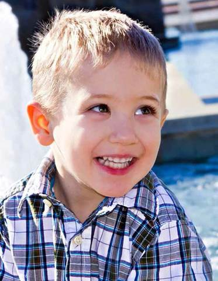
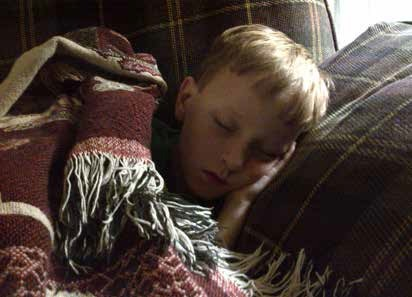
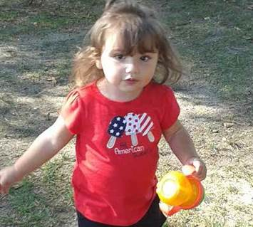
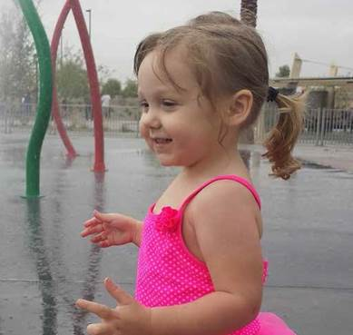
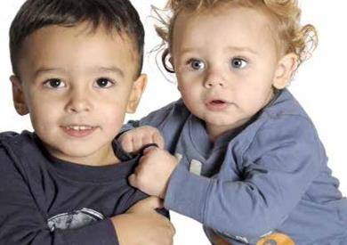

100 Day Kit
For Newly Diagnosed Families of Young Children
Autism Speaks / Family Services / July 2014
A tool kit to assist families of young children in getting the critical information they need in the first 100 days after an autism diagnosis.
Autism Speaks does not provide medical or legal advice or services. Rather, Autism Speaks provides general information about autism as a service to the community. The information provided in this tool kit is not a recommendation, referral or endorsement of any resource, therapeutic method, or service provider and does not replace the advice of medical, legal or educational professionals. Autism Speaks has not validated and is not responsible for any information or services provided by third parties. You are urged to use independent judgment and request references when considering any resource associated with the provision of services related to autism.
About This Kit
The Autism Speaks 100 Day Kit is a tool designed to help assist families of children recently diagnosed with autism during the critical period following an autism diagnosis. The kit includes basic information about autism and its symptoms, tips for dealing with a child’s diagnosis, information about therapies and treatments, forms to help parents get organized, a comprehensive list of resources and more.
The 100 Day Kit was released in 2008 and a second version was released in 2011. It was created by the Autism Speaks Family Services staff in conjunction with both a professional and parent advisory committee and the Family Services Committee.
Acknowledgements
Autism Speaks would like to extend special thanks to the Parent Advisory Committee for the time and effort that they put into reviewing the 100 Day Kit.
100 Day Kit Parent Advisory Committee
100 Day Kit Parent Advisory Committee
- Stacy Crowe
- Jill DiGiorgio
- Rodney Goodman
- Beth Hawes
- Deborah Hilibrand
- Dawn Itzkowitz
- Lance Jeffreys
- Stacy Karger
- Marjorie Madfis
- Donna Ross-Jones
- Betsy Spalla
- Judith Ursitti
- Meredith Weiss
- Marcy Wenning
With gratitude, we thank the 100 Day Kit Professional Advisory Committee for generously donating their time and experience to this project.
100 Day Kit Professional Advisory Committee
Geraldine Dawson, Ph.D.
Professor, Department of Psychiatry and Behavioral Sci- ences, Duke University Medical Center
Robin L. Hansen, M.D.
Director, University Center for Excellence in Develop- mental Disabilities
Director of Clinical Programs
M.I.N.D. Institute/U.C.Davis
Susan Hyman, M.D.
University of Rochester School of Medicine and Dentistry Strong Center for Developmental Disabilities
Connie Kasari, Ph.D.
Professor of Psychological Studies in Education UCLA Graduate School of Education and Information Sciences
Ami Klin, Ph.D.
Yale University, School of Medicine Child Study Center
Lynn Kern Koegel, Ph.D.
Clinical Director, Koegel Autism Center University of California, Santa Barbara
Robert L. Koegel, Ph.D.
Professor of Clinical Psychology and Special Education Director, Koegel Autism Center
University of California, Santa Barbara
Raun Melmed, M.D. Director, Melmed Center Medical Director, SARRC
Ricki Robinson, M.D., MPH
USC Keck School of Medicine
Sarah J. Spence M.D., Ph.D.
Staff Clinician
Pediatrics and Developmental Neuropsychiatry Branch National Institute of Mental Health
Carole Samango-Sprouse, Ed.D.
Director, Neurodevelopmental Diagnostic Center for Young Children, Associate Clinical Professor in the Department of Pediatrics at George Washington University
Wendy Stone, Ph.D.
Vanderbilt Kennedy Center
Treatment and Research Institute for Autism Spectrum Disorders
Lauren Elder, PhD
Director, Ascent Psychological Services
Heather Johnson, PsyD
Staff Psychologist Division of Developmental and Be- havioral Pediatrics, Cincinnati Children’s Hospital
Ashley Murray, PsyM
Cincinnati Children’s Hospital Medical Center
Rebekah Ridgeway PsyD
Staff Psychologist, Kelly O’Leary Center for Autism Spectrum Disorders
Emily Schreiber, MA.
Cincinnati Children’s Hospital Medical Center
Autism Speaks Family Services Committee Dan Aronson
Parent
Liz Bell
Parent
Sallie Bernard*
Parent, Executive Director, SafeMinds
Farah Chapes
Chief Administrative Officer, The Marcus Autism Center
Peter F. Gerhardt, Ed.D
Former President, Organization for Autism Research (OAR)
Mel Karmazin*
Grandparent
Brian Kelly * **
Parent
Artie Kempner*
Parent
Gary S. Mayerson*
Founding Attorney, Mayerson & Associates
Kevin Murray*
Parent
Linda Meyer, Ed.D
Executive Director, Autism New Jersey
Danny Openden, PhD, BCBA-D
President and CEO, Southwest Autism Research and Resource Center (SARRC)
Valerie Paradiz, PhD
Director, Valerie Paradiz, LLC Director Autistic Global Initiative Parent and self-advocate
Stuart Savitz*
Parent
Paul Shattuck, PhD
Leader, AJ Drexel Autism Institute Research Program Area on Life Course Outcomes
Stephen Shore, EdD
Assistant Professor, Special Education, Adelphi University, Self-advocate
Michelle Smigel
Parent
*Autism Speaks board member
**Chairperson – Family Services Committee Parent – indicates a parent of a child with autism
Autism Speaks thanks the following supporters whose generous contributions have helped to fund this 100 Day Kit for Newly Diagnosed Families.
About Autism
Why Was My Child Diagnosed with Autism? And What Does It Mean?
Your child has been diagnosed with autism spectrum disorder and you have asked for help. This is an important turning point in a long journey. For some families, it may be the point when, after a long search for answers, you now have a name for something you didn’t know what to call, but you knew existed.
Perhaps you suspected autism, but held out hope that an evaluation would prove otherwise. Many fami- lies report mixed feelings of sadness and relief when their child is diagnosed. You may feel completely overwhelmed. You may also feel relieved to know that the concerns you have had for your child are valid. Whatever it is you feel, know that thousands of parents share this journey. You are not alone. There is reason to hope. There is help. Now that you have the diagnosis, the question is, where do you go from here? The Autism Speaks 100 Day Kit was created to help you make the best possible use of the next 100 days in the life of your child. It contains informa- tion and advice collected from trusted and respected experts on autism and parents like you.
Why Does My Child Need a Diagnosis of Autism?
Parents are usually the first to notice the early signs of autism. You probably noticed that your child was developing differently from his or her peers. The differences may have existed from birth or may have become more noticeable later. Sometimes, the differ- ences are severe and obvious to everyone. In other cases, they are more subtle and are first recognized by a daycare provider or preschool teacher. Those differences, the symptoms of autism, have led thousands of parents like you to seek answers that have resulted in a diagnosis of autism. You may wonder: Why does my child need a diagnosis of autism? That’s a fair question to ask - especially when right now, no one is able to offer you a cure. Autism Speaks is dedicated to funding global biomedical research into the causes, prevention, treatments and a possible cure for autism. Great strides have been made and the current state of progress is a far cry from the time when parents were given no hope for their children. Some of the most brilliant minds of our time have turned their attention toward this disorder.

It is important to remember that your child is the same unique, lovable, wonderful person he or she was before the diagnosis. There are, however, several reasons why having a diagnosis is important for your child. A thorough and detailed diagnosis provides important information about your child’s behavior and development. It can help create a roadmap for treatment by identifying your child’s specific strengths and challenges and providing useful information about which needs and should be targeted for effective intervention. A diagnosis is often required to access autism-specific services through early intervention programs or your local school district.
How is Autism Diagnosed?
Presently, we don’t have a medical test that can diagnose autism. As the symptoms of autism vary, so do the routes to obtaining a diagnosis. You may have raised questions with your pediatrician. Some children are identified as having developmental delays before obtaining a diagnosis of autism and may already receive some Early Intervention or Special Education services. Unfortunately, parents’ concerns are sometimes not taken seriously by their doctor and as a result, a diagnosis is delayed. Autism Speaks and other autism-related organizations are working hard to educate parents and physicians, so that children with autism are identified as early as possible.
Your child may have been diagnosed by a developmental pediatrician, a neurologist, a psychiatrist or a psychologist. In some cases, a team of specialists may have evaluated your child and provided recommendations for treatment. The team may have included an audiologist to rule out hearing loss, a speech & language therapist to determine language skills and needs and an occupational therapist to evaluate physical and motor skills. A multi-disciplinary evaluation is important for diagnosing autism and other challenges that often accompany autism, such as delays in motor skills. If your child has not been evaluated by a multi-disciplinary team, you will want to make sure further evaluations are conducted so that you can learn as much as possible about your child’s individual strengths and needs.
For more information, visit the Autism Speaks Autism Treatment Network at autismspeaks.org/atn.
Once you have received a formal diagnosis, it is important to make sure that you ask for a comprehensive report that includes the diagnosis in writing, as well as recommendations for treatment. The doctor may not be able to provide this for you at the appointment, as it may take some time to compile, but be sure to follow up and pick up this helpful necessary report as soon as it’s available.
What is Autism?
Autism spectrum disorder (ASD) and autism are both general terms for a group of complex disorders of brain development. These disorders are characterized, in varying degrees, by difficulties in social interaction, verbal and nonverbal communication and repetitive behaviors. With the May 2013 publication of the fifth edition of the American Psychiatric Association’s Diagnostic and Statistical Manual of Mental Disorders (commonly referred to as the DSM-5), all autism disorders were merged into one umbrella diagnosis of ASD. Previously, they were recognized as distinct subtypes, including autistic disorder, childhood disintegrative disorder, pervasive developmental disorder-not otherwise specified (PDD-NOS) and Asperger Syndrome. The DSM is the main diagnostic reference used by mental health professionals and insurance providers in the United States.
You may also hear the terms Classic Autism or Kanner’s Autism (named after the first psychiatrist to describe autism) used to describe the most severe form of the disorder. Under the current DSM-5, the diagnosis of autism requires that at least six developmental and behavioral characteristics are observed, that problems are present before the age of three and that there is no evidence of certain other conditions that are similar.
There are two domains where people with ASD must show persistent deficits:
- persistent social communication and social interaction
- restrictedandrepetitivepatterns of behavior
More specifically, people with ASD must demonstrate (either in the past or in the present) deficits in social-emotional reciprocity, deficits in nonverbal communicative behaviors used for social interaction and deficits in developing, maintaining and understanding relationships. In addition, they must show at least two types of repetitive patterns of behavior, including stereotyped or repetitive motor movements, insistence on sameness or inflexible adherence to routines, highly restricted, fixated interests, hyper or hyporeactivity to sensory input or unusual interest in sensory aspects of the environment. Symptoms can be currently present or reported in past history.
In addition to the diagnosis, each person evaluated will also be described in terms of any known genetic cause (e.g. Fragile X syndrome, Rett syndrome), level of language and intellectual disability and presence of medical conditions such as seizures, anxiety, depression and/or gastrointestinal (GI) problems.
The DSM-5 has an additional category called Social Communication Disorder (SCD). This allows for
a diagnosis of disabilities in social communication, without the presence of repetitive behavior. SCD is a new diagnosis and much more research and
information is needed. There are currently few guidelines for the treatment of SCD. Until such guidelines become available, treatments that target socialcommunication, including many autism-specific interventions, should be provided to individuals with SCD.
To read the whole DSM-5 criteria, please visit autismspeaks.org/dsm-5.
How Common is Autism?
Autism statistics from the U.S. Centers for Disease Control and Prevention (CDC) released in March 2014 identify around 1 in 68 American children as on the autism spectrum – a ten-fold increase in prevalence in 40 years. Careful research shows that this increase is only partly explained by improved diagnosis and awareness. Studies also show that autism is four to five times more common among boys than girls. An estimated 1 out of 42 boys and 1 in 189 girls are diagnosed with autism in the United States.
ASD affects over 2 million individuals in the U.S. and tens of millions worldwide. Moreover, government autism statistics suggest that prevalence rates have increased 10% to 17% annually in recent years. There is no established explanation for this continuing increase, although improved diagnosis and environmental influences are two reasons
often considered.
What Causes Autism?
Not long ago, the answer to this question would have been “we have no idea.” Research is now delivering the answers. First and foremost, we now know that there is no one cause of autism, just as there is no one type of autism. Over the last five years, scien- tists have identified a number of rare gene changes or mutations associated with autism. Research has identified more than 100 autism risk genes. In around 15% of cases, a specific genetic cause of a person’s autism can be identified. However, most cases in- volve a complex and variable combination of genetic risk and environmental factors that influence early brain development.
In other words, in the presence of a genetic pre- disposition to autism, a number of non-genetic or environmental influences further increase a child’s risk. The clearest evidence of these environmental risk factors involves events before and during birth. They include advanced parental age at time of con- ception (both mom and dad), maternal illness during pregnancy, extreme prematurity, very low birth weight and certain difficulties during birth, particularly those involving periods of oxygen deprivation to the baby’s brain. Mothers exposed to high levels of pesticides and air pollution may also be at higher risk of having a child with ASD. It is important to keep in mind that these factors, by themselves, do not cause autism. Rather, in combination with genetic risk factors, they appear to modestly increase risk.
A small but growing body of research suggests that autism risk is lower among children whose mothers took prenatal vitamins (containing folic acid) in the months before and after conception.
Increasingly, researchers are looking at the role of the immune system in autism. Autism Speaks is working to increase awareness and investigation of these and other issues where further research has the potential to improve the lives of those who struggle with autism.
While the causes of autism are complex, it is abun- dantly clear that it is not caused by bad parenting. Dr. Leo Kanner, the psychiatrist who first described autism as a unique condition in 1943, believed that it was caused by cold, unloving mothers. Bruno Bettelheim, a renowned professor of child develop- ment, perpetuated this misinterpretation of autism. Their promotion of the idea that unloving mothers caused their children’s autism created a generation of parents who carried the tremendous burden of guilt for their child’s disability. In the 1960s and 70s, Dr. Bernard Rimland, the father of a son with autism who later founded the Autism Society of America and the Autism Research Institute, helped the medical community understand that autism is a biological disorder and is not caused by cold parents.
More Information about Symptoms of Autism
Autism affects the way an individual perceives the world and makes communication and social interac- tion difficult. Autism spectrum disorders (ASD) are characterized by social-interaction difficulties, communication challenges and a tendency to engage in repetitive behaviors. However, symptoms and their severity vary widely across these three core areas. Taken together, they may result in relatively mild challenges for someone on the high functioning end of the autism spectrum. For others, symptoms may be more severe, as when repetitive behaviors and lack of spoken language interfere with everyday life.
It is sometimes said that if you know one person with autism, you know one person with autism.
While autism is usually a life long condition, all children and adults benefit from interventions, or therapies, that can reduce symptoms and increase skills and abilities. Although it is best to begin inter- vention as soon as possible, the benefits of therapy can continue throughout life. The long term outcome is highly variable. A small percentage of children lose their diagnosis over time, while others remain severely affected. Many have normal cognitive skills, despite challenges in social and language abilities. Many individuals with autism develop speech and learn to communicate with others. Early intervention can make extraordinary differences in your child’s development. How your child is functioning now may be very different from how he or she will function later on in life.
The information following on the social symptoms, communication disorders and repetitive behaviors associated with autism is partially taken from the National Institute of Mental Health (NIMH) website.

Social symptoms
Typically developing infants are social by nature. They gaze at faces, turn toward voices, grasp a finger and even smile by 2 to 3 months of age. By contrast, most children who develop autism have difficulty engaging in the give-and-take of everyday human interactions. By 8 to 10 months of age, many infants who go on to develop autism are showing some symptoms such as failure to respond to their names, reduced interest in people and delayed babbling. By toddlerhood, many children with autism have difficulty playing social games, don’t imitate the actions of others and prefer to play alone. They may fail to seek comfort or respond to parents’ displays of anger or affection in typical ways. Research suggests that children with autism are attached to their parents. However, the way they express this attachment can be unusual. To parents, it may seem as if their child is disconnected. Both children and adults with autism also tend to have diffi- culty interpreting what others are thinking and feeling. Subtle social cues such as a smile, wave or grimace may convey little meaning. To a person who misses these social cues, a statement like “Come here!” may mean the same thing, regardless of whether the speaker is smiling and extending her arms for a hug or frowning and planting her fists on her hips. Without the ability to interpret gestures and facial expressions, the social world can seem bewildering. Many people with autism have similar difficulty seeing things from another person’s perspective. Most five-year-olds understand that other people have different thoughts, feelings and goals than they have. A person with autism may lack such under- standing. This, in turn, can interfere with the ability to predict or understand another person’s actions. It is common – but not universal – for those with autism to have difficulty regulating emotions. This can take the form of seemingly “immature” behavior such as crying or having outbursts in inappropriate situations. It can also lead to disruptive and physically aggressive behavior. The tendency to “lose control” may be particularly pronounced in unfamiliar, over- whelming or frustrating situations. Frustration can also result in self-injurious behaviors such as head banging, hair pulling or self-biting. Fortunately, children with autism can be taught how to socially interact, use gestures and recognize facial expressions. Also, there are many strategies that can be used to help the child with autism deal with frustration so that he or she doesn’t have to resort to challenging behaviors. We will discuss this later.
Communication difficulties
Young children with autism tend to be delayed in bab- bling, speaking and learning to use gestures. Some infants who later develop autism coo and babble during the first few months of life before losing these communicative behaviors. Others experience signifi- cant language delays and don’t begin to speak until much later. With therapy, however, most people with autism do learn to use spoken language and all can learn to communicate. Many nonverbal or nearly nonverbal children and adults learn to use communication systems such as pictures, sign language, electronic word processors or even speech-generating devices.
When language begins to develop, people with autism may use speech in unusual ways. Some have difficulty combining words into meaningful sentences. They may speak only single words or repeat the same phrase over and over. Some go through a stage where they repeat what they hear verbatim (echolalia).
Many parents assume difficulties expressing language automatically mean their child isn’t able to understand the language of others, but this is not always the case. It is important to distinguish between expressive lan- guage and receptive language. Children with difficulties in expressive language are often unable to express what they are thinking through language, whereas children with difficulties in receptive language are
often unable to understand what others are saying. Therefore, the fact that your child may seem unable to express him or herself through language does not necessarily mean he or she is unable to comprehend the language of others. Be sure to talk to your doctor or look for signs that your child is able to interpret language, as this important distinction will affect the way you communicate with him or her.
It is important to understand the importance of prag- matics when looking to improve and expand upon your child’s communication skills. Pragmatics are social rules for using language in a meaningful context or conversation. While it is important that your child learns how to communicate through words or sentences, it
is also key to emphasize both when and where the specific message should be conveyed. Challenges in pragmatics are a common feature of spoken language difficulties in children with autism. These challenges may become more apparent as your child gets older.
Some mildly affected children exhibit only slight delays in language or even develop precocious language and unusually large vocabularies – yet have difficulty sustaining a conversation. Some children and adults with autism tend to carry on monologues on a
favorite subject, giving others little chance to comment. In other words, the ordinary “give-and-take” of conver- sation proves difficult. Some children with ASD with superior language skills tend to speak like little professors, failing to pick up on the “kid-speak” that’s common among their peers.
Another common difficulty is the inability to under- stand body language, tone of voice and expressions that aren’t meant to be taken literally. For example, even an adult with autism might interpret a sarcastic “Oh, that’s just great!” as meaning it really is great. Conversely, individuals affected by autism may not exhibit typical body language. Facial expressions, movements and gestures may not match what they are saying. Their tone of voice may fail to reflect their feelings. Some use a high-pitched sing-song or a flat, robot-like voice. This can make it difficult for others to know what they want and need. This failed communication, in turn, can lead to frustration and inappropriate behavior (such as screaming or grabbing) on the part of the person with autism. Fortunately, there are proven methods for helping children and adults with autism learn better ways to express their needs. As the person with autism learns to communicate what he or she wants, challenging behaviors often subside.
Children with autism often have difficulty letting others know what they want or need until they are taught how to communicate through speech, gestures or other means.
Repetitive behaviors
Unusual repetitive behaviors and/or a tendency to engage in a restricted range of activities are another core symptom of autism. Common repetitive behav- iors include hand-flapping, rocking, jumping and twirling, arranging and rearranging objects and repeating sounds, words or phrases. Sometimes the repetitive behavior is self-stimulating, such as wiggling fingers in front of the eyes. The tendency to engage in a restricted range of activities can be seen in the way that many children with autism play with toys. Some spend hours lining up toys in a specific way instead of using them for pretend play. Similarly, some adults are preoccupied with having household or other objects in a fixed order or place. It can prove extremely upsetting if someone or something disrupts the order. Along these lines, many children and adults with autism need and demand extreme consistency in their environment and daily routine. Slight changes can be extremely stressful and lead to outbursts. Repetitive behaviors can take the form of intense preoccupations or obsessions. These extreme inter- ests can prove all the more unusual for their content (e.g. fans, vacuum cleaners or toilets) or depth of knowledge (e.g. knowing and repeating astonishingly detailed information about Thomas the Tank Engine or astronomy). Older children and adults with autism may develop tremendous interest in numbers, symbols, dates or science topics.
Many children with autism need and demand absolute consistency in their environment.
Unique Abilities that May Accompany Autism
Along with the challenges that autism involves, you may have noticed that your child also exhibits areas of strength. Although not all children have special talents, it is not uncommon for individuals with autism to have exceptional skills in math, music, art and reading, among others. These areas of expertise can provide great satisfaction and pride for the child with autism. If possible, incorporate your child’s areas of expertise into his or her everyday activities and use them whenever possible as a way for him or her to learn and excel.

The following is adapted from Sally Ozonoff, Geraldine Dawson and James McPartland’s
A Parent’s Guide to Asperger’s Syndrome and High-Functioning Autism.
Just as individuals with autism have a variety of difficulties, they also have some distinctive strengths. Some of the strengths that individuals with autism have may include:
- Abilityto understand concrete concepts, rules and sequences
- Strong long term memory skills
- Math skills
- Computerskills
- Musical ability
- Artisticability
- Abilityto think in a visual way
- Abilityto decode written language at an early age (This ability is called Hyperlexia – some children with autism can decode written language earlier than they can comprehend written language.)
- Honesty– sometimes to a fault
- Abilityto be extremely focused – if they are working on a preferred activity
- Excellent sense of direction
“How Can My Child Have Autism When He Seems So Smart?”
From Does My Child Have Autism? by Wendy Stone
Right now you might be thinking about all the things your child with autism learned at a much younger age than other children you know. And yes, you are right: there are also things that children with autism learn on their own much faster than their typically develop- ing peers or siblings. For example, they can be very good at learning to pick out their favorite DVD from a stack, even when it’s not in its case. They may learn at a very young age how to operate the remote controls to the TV and DVD player so that they can rewind their videos to their favorite parts (or fast for- ward through the parts they don’t like). They can be very creative in figuring out ways to climb up on the counter to reach a cabinet that has their favorite cere- al or even how to use the key to unlock the dead bolt on the back door so they can go outside to play on the swing. Clearly, these are not behaviors that you would even think about trying to teach a two-year-old child. And yet some children with autism somehow manage to acquire these skills on their own. How can we understand this inconsistency between the things children with autism do and don’t learn? How can a child who can’t put different shapes into a shape sorter learn to turn on the TV and DVD player, put a DVD in and push the play button? How can a child who can’t understand a simple direction like “get your coat” figure out how to unlock a door to get outside?
What accounts for this unique learning style? In a word: motivation. We all pay attention better to the things that interest us, so we become much more proficient at learning them. Understanding what is motivating to your child (all children are different) will be one of the keys to increasing their learning and their skills. Your child’s special talents may be part of his unique and inherent learning style and nature.
Physical and Medical Issues that May Accompany Autism
Seizure disorders
Seizure Disorder, also called epilepsy, occurs in as many as one third of individuals with autism spec- trum disorder. Epilepsy is a brain disorder marked by recurring seizures or convulsions. Experts propose that some of the brain abnormalities that are associ- ated with autism may contribute to seizures. These abnormalities can cause changes in brain activity by disrupting neurons in the brain. Neurons are cells in the brain that process and transmit information and send signals to the rest of the body. Overloads or disturbances in the activity of these neurons can result in imbalances that cause seizures.
Epilepsy is more common in children who also have cognitive deficits. Some researchers have suggest- ed that seizure disorder is more common when the child has shown a regression or loss of skills. There are different types and subtypes of seizures and a child with autism may experience more than one type. The easiest to recognize are large “grand mal” (or tonic-clonic) seizures. Others include “petit mal” (or absence) seizures and subclinical seizures, which may only be apparent in an EEG (electro- encephalogram). It is not clear whether subclinical seizures have effects on language, cognition and behavior. The seizures associated with autism usually start either early in childhood or during adolescence, but may occur at any time. If you are concerned that your child may be having seizures, you should see a neurologist. The neurologist may order tests that may include an EEG, an MRI (Magnetic Resonance Imaging), a CT (Computed Axial Tomography) and a CBC (Complete Blood Count). Children and adults with epilepsy are typically treated with anticonvul- sants or seizure medicines to reduce or eliminate occurrences. If your child has epilepsy, you will work closely with a neurologist to find the medicine (or combination of medicines) that works the best with the fewest side effects and to learn the best ways to ensure your child’s safety during a seizure.
You can find more information about autism and epilepsy at autismspeaks.org/family-services/epilepsy.
Genetic disorders
Some children with autism have an identifiable genetic condition that affects brain development. These genetic disorders include Fragile X syndrome, Angelman syndrome, tuberous sclerosis, chromosome 15 duplica- tion syndrome and other single-gene and chromosomal disorders. While further study is needed, single gene disorders appear to affect 15 to 20% of those with ASD. Some of these syndromes have characteristic features or family histories, the presence of which may prompt your doctor to refer your child to a geneticist or neurolo- gist for further testing. The results can help increase awareness of associated medical issues and guide treatment and life planning.
Gastrointestinal (GI) disorders
Many parents report gastrointestinal (GI) problems in their children with autism. The exact prevalence of gastrointestinal problems such as gastritis, chronic constipation, colitis and esophagitis in individuals with autism is unknown. Surveys have suggested that between 46 and 85% of children with autism have problems such as chronic constipation or diarrhea. One study identified a history of gastrointes- tinal symptoms (such as abnormal pattern of bowel movements, frequent constipation, frequent vomiting and frequent abdominal pain) in 70% of the children with autism. If your child has similar symptoms, you will want to consult a gastroenterologist, preferably one who works with people with autism. Your child’s physician may be able to help you find an appropriate specialist. Pain caused by GI issues is sometimes recognized because of a change in a child’s behavior, such as an increase in self-soothing behaviors like rocking or outbursts of aggression or self-injury.
Bear in mind that your child may not have the language skills to communicate the pain caused by GI issues. Treating GI problems may result in improvement in your child’s behavior. Anecdotal evidence suggests that some children may be helped by dietary intervention for GI issues, including the elimination of dairy and gluten containing foods. (For more information, see Gluten Free Casein Free diet in the treatment section of this kit.) As with any treatment, it is best to consult your child’s physician to develop a comprehensive plan. In January 2010, Autism Speaks initiated a campaign to inform pediatricians about the diagnosis and treatment of GI problems associated with autism.
For additional information from the Official Journal of American Academy of Pediatrics, go to: pediatrics.aappublications.org/cgi/ content/full/125/Supplement_1/S1.
For information that can be shared with your child’s doctor, go to: autismspeaks.org/press/ gastrointestinal_treatment_guidelines.php.

Sleep dysfunction
Is your child having trouble getting to sleep or sleep- ing through the night? Sleep problems are common in children and adolescents with autism. Having a child with sleep problems can affect the whole fam- ily. It can also have an impact on the ability of your child to benefit from therapy. Sometimes sleep issues may be caused by medical issues such as obstruc- tive sleep apnea or gastroesophageal reflux and addressing the medical issues may solve the prob- lem. In other cases, when there is no medical cause, sleep issues may be managed with behavioral inter- ventions including “sleep-hygiene” measures, such as limiting the amount of sleep during the day and establishing regular bedtime routines. There is some evidence of abnormality of melatonin regulation in children with autism. While melatonin may be effec- tive for improving the ability of children with autism to fall asleep, more research is needed. Melatonin or sleep aids of any kind should not be given without first consulting with your child’s physician.
For additional information on sleep issues visit: autismspeaks.org/science/resources-programs/ autism-treatment-network/tools-you-can-use/ sleep-tool-kit.
Sensory Integration Dysfunction
Many children with autism experience unusual responses to sensory stimuli or input. These responses are due to difficulty in processing and integrating sensory information. Vision, hearing, touch, smell, taste, the sense of movement (vestibular system) and the sense of position (proprioception) can all be affected. This means that while information is sensed normally, it may be perceived much differently. Sometimes stimuli that seem “normal” to others can be experienced as painful, unpleasant or confusing by a child with Sensory Integration Dysfunction (SID), the clinical term for this characteristic. (SID may also be called Sensory Processing Disorder or Sensory Integration Disorder.) SIDs can involve hypersensitivity (also known as sensory defensiveness) or hyposensi- tivity. An example of hypersensitivity would be an inability to tolerate wearing clothing, being touched or being in a room with normal lighting. Hyposensi- tivity might be apparent in a child’s increased tolerance for pain or a constant need for sensory stimulation. Treatment for Sensory Integration Dysfunction is usually addressed with occupational therapy and/or sensory integration therapy.
Pica
Pica is an eating disorder involving eating things that are not food. Children between 18 and 24 months
of age often eat nonfood items, but this is typically a normal part of development. Some children with autism and other developmental disabilities persist beyond the developmentally typical timeframe and
continue to eat items such as dirt, clay, chalk or paint chips. Children showing signs of persistent mouthing of fingers or objects, including toys, should be tested for elevated blood levels of lead, especially if there
is a known potential for environmental exposure to lead. You should speak to your doctor about these concerns so he or she can help you with treatment. Your child’s doctor will help you to assess if your child needs a behavioral intervention or if it is something that can be managed at home.
Visit the Autism Speaks Tool Kits page to down- load tool kits with information and resources related to pica for both parents and professionals at autismspeaks.org/family-services/tool-kits.
Mental health
Oftentimes a child diagnosed with ASD may receive an additional diagnosis such as Attention Deficit Hyperactivity Disorder (ADHD). ADHD and anxiety are quite common and addressing these diagnoses properly can help your child make great strides.
Recent studies suggest that 1 in 5 children on the autism spectrum also has ADHD and 30% struggle with an anxiety disorder such as social phobia, separation anxiety, panic disorder and specific phobias. The classic symptoms of ADHD include chronic problems with inattention, impulsivity and hyperactivity. However, these or similar symptoms can likewise result from autism. For this reason, it is important that evaluation be made by someone
with expertise in both disorders. A recent study found that just 1 in 10 children with autism and ADHD was receiving medication to relieve the ADHD symptoms.
In regards to anxiety, children with autism express anxiety or nervousness in many of the same ways as typically developing children. Understandably, many individuals with ASD have trouble communi- cating how they feel. Outward manifestations may be the best clues. In fact, some experts suspect that outward symptoms of anxiety – such as sweating and acting out – may be especially prominent among those with ASD. This can include a racing heart, muscular tensions and stomachaches. It is important for your child to be evaluated by a professional who
has expertise in both autism and anxiety so he or she can provide the best treatment options for your child.

You, Your Family and Autism
How Will I Deal with This Diagnosis?
You are never prepared for a diagnosis of autism. It is likely that you will experience a range of emotions. It is painful to love so much, to want something so much and not quite get it. You want your child to get better so badly that you may feel some of the stages commonly associated with grieving. You may “revisit” these feelings from time to time in the future. Part of moving forward is dealing with your own needs and emotions along the way.
Stages associated with grieving

Elisabeth Kübler-Ross, M.D., a Swiss-American psychiatrist, outlined five stages in the grief process. Grief does not progress in an orderly way that follows a predictable path. It is normal to move forwards and backwards among the five stages, skip a stage or be stuck in one. Her five stages are outlined here.
Denial
You may go through periods of refusing to believe what is happening to your child. You don’t con- sciously choose this reaction; it just happens. During this time, you may not be able to hear the facts as they relate to your child’s diagnosis. Don’t be critical of yourself for reacting this way. Denial is a way of coping. It may be what gets you through a particularly difficult period. You must, however, be aware that
you are in denial, so that it doesn’t cause you to lose focus on your child’s treatment. Try not to “shoot the messenger.” When a professional, a therapist or a teacher tells you something that is hard to hear about your child, consider that he or she is trying to help you so that you can address the problem. It is impor- tant not to alienate people who can give you helpful feedback and help monitor your child’s progress.
Whether you agree or not, try to thank them for the information. If you are upset, try considering the infor- mation when you have had a chance to calm down.
Anger
With time, your denial may give way to anger. Although anger is a natural part of the process, you may find that it’s directed at those closest to you – your child, your spouse, your friend or at the world in general. You may also feel resentment toward
parents of typical children. Your anger may come out in different ways – snapping at people, overreacting to small things, even screaming and yelling. Anger
is normal. It is a healthy and expected reaction to feelings of loss and stress that come with this diag- nosis. Expressing your anger releases tension. It is an attempt to tell the people around you that you hurt and are outraged that this diagnosis has happened to your child.
“I felt angry when a child at my son’s school was diagnosed with Leukemia around the time our son was diagnosed with autism. Everyone sent cards and cooked dinners for them. They didn’t know I needed that kind of help too. When I let people know I needed help they came through for me.”
Bargaining
This stage involves the hope that the diagnosis can be undone. The feeling of helplessness you may be experiencing might create a need to regain control of the situation. Many parents will ask themselves questions like: What if we had gotten our child in to the doctor earlier? What if it was caused by something we did? You may also question the diagnosis or search for another doctor hoping that he or she might tell you something different.
Sadness or Grief
Many parents must mourn the loss of some of the hopes and dreams they had for their child before they can move on. There will probably be many times when you feel extremely sad. Friends may refer to this as being “depressed,” which can sound frighten- ing. There is, however, a difference between sadness and depression. Depression often stands in the way of moving forward. Allowing yourself to feel sadness can help you grow. You have every right to feel sad and to express it in ways that are comfortable.
Crying can help release some of the tension that builds up when you try to hold in sadness. A good cry can get you over one hurdle and help you face the next. If you find that your sadness is interfering with your ability to cope or you show other symptoms of depression, such as weight loss, social withdrawal, suicidal thoughts, sleep difficulties, low self-esteem or loss of interest in daily activities, consult your family physician who can recommend treatment.
“My husband had a harder time accepting our son’s diagnosis at first. When Max began making progress in his ABA program, everything changed for the better. For a while, I was the one holding everything together for all of us.”
Acceptance
Ultimately, you may feel a sense of acceptance. It’s helpful to distinguish between accepting that your child has been diagnosed with autism and accepting autism. Accepting the diagnosis simply means that you are ready to advocate for your child. The period following an autism diagnosis can be very challeng- ing, even for the most harmonious families. Although the child with autism may never experience the nega- tive emotions associated with the diagnosis, parents, siblings and extended family members may each process the diagnosis in different ways, and at differ- ent rates. Give yourself time to adjust. Be patient with yourself. It will take some time to understand your child’s disorder and the impact it has on you and your family. Difficult emotions may resurface from time to time. There may be times when you feel helpless and angry that autism has resulted in a life that is much different than you had planned. But you will also experience feelings of hope as your child begins to make progress.
Caring for the Caregiver
Changing the course of the life of your child with autism can be a very rewarding experience. You are making an enormous difference in his or her life. To make it happen, you need to take care of yourself.
Take a moment to answer these questions:
- Where does your support and strength come from?
- How are you really doing?
- Do you need to cry?
- Complain?
- Scream?
- Would you like some help but don’t know who to ask?
Remember that if you want to take the best possible care of your child, you must first take the best possible care of yourself.
Parents often fail to evaluate their own sources of strength, coping skills or emotional attitudes. You may be so busy meeting the needs of your child that you don’t allow yourself time to relax, cry or simply think. You may wait until you are so exhausted or stressed out that you can barely carry on before you consider your own needs. Reaching this point is not helping you or your family. You may feel that your child needs you right now, more than ever. Your “to do” list may be what is driving you forward right now. You may feel completely overwhelmed and not know where to start. There is no single way to cope. Each family is unique and deals with stressful situations differently. Getting your child started in treatment will help you feel better. Acknowledging the emotional impact of autism and taking care of yourself during this stressful period will help prepare you for the chal- lenges ahead. Autism is a pervasive, multi-faceted disorder. It will not only change the way that you look at your child, it will change the way you look at the world. Maintaining open and honest communication with your partner and family as well as discussing your fears and concerns will help you to deal with the many changes in your life. As some parents may tell you, you may be a better person for it. The love and hope that you have for your child make you stronger than you realize.
Here are some tips from parents whohaveexperiencedwhat you aregoing through:
Get going.
Getting your child started in treatment will help. There are many details you will be managing in an intensive treatment program, especially if it is based in your home. If you know your child is engaged in meaning- ful activities, you will be more able to focus on moving forward. It may also free up some of your time so you can educate yourself, advocate for your child and take care of yourself.
Ask for help.
Asking for help can be very difficult, especially at first. Don’t hesitate to use whatever support is available to you. People around you may want to help, but may not know how. Is there someone who can take your other kids somewhere for an afternoon? Or cook dinner for your family one night so that you can spend the time learning? Can someone pick a few things up for you at the store or do a load of laundry? Or let other people know you are going through a difficult time and could use a hand?
Talk to someone.
Everyone needs someone to talk to. Let someone know what you are going through and how you feel. Someone who just listens can be a great source of strength. If you can’t get out of the house, use the phone to call a friend.
Consider joining a support group.
It may be helpful to listen or talk to people who have been or are going through a similar experience.
Support groups can be great sources of information about what services are available in your area and who provides them. You may have to try more than one to find a group that feels right to you. You may find you aren’t a “support group kind of person.” For many parents in your situation, support groups provide valuable hope, comfort and encouragement.
You may also want to consider attending a recre- ational program for children with autism. This may be a good way to meet other parents just like you.
One study from Vanderbilt University, a part of the Autism Speaks Autism Treatment Network, found that mothers of children with autism benefit significantly from weekly stress-reduction classes led by other mothers. The classes reduced previously high levels of personal stress, anxiety and depression and im- proved the mom’s interactions with their children.
“At my support group I met a group of women who were juggling the same things I was. It felt so good not to feel like I was from another planet!”
You may find a listing of support groups in the Autism Speaks Resource Guide at autismspeaks.org/resource-guide. Another avenue is through the local SEPTA (Special Education Parent Teacher Association) in your school district or online through the Autism Speaks Facebook page at facebook.com/autismspeaks.
My Autism Team, the social network for parents of kids with autism, is another great resource. On this site, parents of children with autism share their experiences, including their reviews of local service providers, to help inform the parents in their communities. Visit the site at myautismteam.com.
Try to take a break.
If you can, allow yourself to take some time away, even if it is only a few minutes to take a walk. If it’s possible, getting out to a movie, going shopping or visiting a friend can make a world of difference. If you feel guilty about taking a break, try to remind your- self that this break will help you feel renewed for the things you need to do when you get back. Try to get some rest. If you are getting regular sleep, you will be better prepared to make good decisions, be more patient with your child and more able to deal with the stress in your life.
Consider keeping a journal.
Louise DeSalvo, in Writing as a Way of Healing, notes that studies have shown that: “Writing that describes traumatic events and our deepest thoughts and feel- ings about them is linked with improved immune function, improved emotional and physical health, and positive behavioral changes.” Some parents have found a journal to be a helpful tool for keeping track of their child’s progress, what is working and what isn’t. Be mindful of the time you spend on the internet. The internet will be one of the most important tools you have for learning what you need to know about autism and how to help your child.
Unfortunately, there is more information on the web than any of us have time to read in a lifetime. There may also be a lot of misinformation.
As a parent, always remember to trust your gut. There are many paths to take, treatment options and opinions. You know your child best. Work with your child’s treatment team to find what works best for your child and your family.
Right now, while you are trying to make the most of every minute, keep an eye on the clock and frequently ask yourself these important questions:
- Is what I’m reading right now very likely to be relevant to my child?
- Is it new information? Is it helpful?
- Is it from a reliable source?
Sometimes, the time you spend on the internet will be incredibly valuable. Other times, it may be better for you and your child if you use that time to take care of yourself.
The internet will be one of the most important tools you have for learning what you need to know about autism and how to help your child.
Becoming Resilient During Times of Adversity
by Dr. Peter Faustino, school psychologist, state delegate to the National Association of School Psychologists (NASP) and member of the Autism Speaks Family Services Committee
Resiliency, or finding ways to properly adapt to challenges or stress in your life, is a process, not a character trait. Research has revealed several key el- ements in fostering resilience and by considering the following, you will find you are not only helping your child but yourself and your entire family.
Connectedness: One of the strongest pillars in resilience is having positive relationships or feeling connected to others. While the diagnosis of autism may be extraordinary at first, it no longer is synony- mous with being alone or having few places to turn for help. This tool kit is only one example of the ways in which Autism Speaks can lend support. Regional chapters of Autism Speaks all across the country can open up doors to other parents, families and com- munities who have experience with navigating the autism diagnosis. When relationships with friends, neighbors and family are based on mutual, reciprocal support and care, they can bolster resiliency.
Competence: Whenever a challenge presents itself, individuals can feel a loss of control over the situa- tion and their lives. Competence or at this early stage learning about autism and then taking action on realistic goals will help you gain a sense of control.
Having trustworthy information and feeling more competent (not only about autism but in other aspects of your life) can be critical in maintaining a hopeful outlook.
Care: Eventually, your journey will lead to a place where you can balance negative emotions with positive ones. Taking care to avoid seeing an event as unbearable or unchangeable versus looking for opportunities and considering the event in a broader context can be an important factor to resilience.
Positive attitudes such as encouraging yourself to try, being determined to persevere until success is attained, applying a problem solving approach to difficult situations and fostering feelings of determi- nation or grit are critical. Care also refers to parents attending to their own mind and body, exercising regularly, as well paying attention to basic needs and feelings.
Resilience is the result of individuals being able to interact with their environments and the processes that either promote wellbeing or protect them against overwhelming influence of risk factors. In many cases, adversity can act as a spring board for growth
and success, not only in our children, but in ourselves as well.
“Is Your Son On the Spectrum?”
In her own words,
Alysia K. Butler, who has a recently diagnosed son, describes her experience being part of the autism community.
The question was slightly jarring to me. My son and I had just walked into a gymnastics class for kids with autism. We had received his diagnosis only three weeks before and we hadn’t shared our news with anyone except for close friends and family. It was the first time we had been anywhere that was just for kids like mine and I wasn’t really ready to talk to a total stranger about it.
“Yes,” I answered, trying to keep the conversation short.
“Hi and welcome! That’s my son over there and my name is Sandy. How old is your son? Do you live in town? How long have you known your son was on the spectrum? What was his diagnosis?” I really didn’t want to answer her. I wasn’t even sure we belonged at this class and all I wanted to do was pay attention to my son to see how he was responding to the class. I watched the other kids as they came in – six boys and one girl – and my first instinct was that we were in the wrong place. One little boy was crying, another was spinning in circles and another one was running in all different directions. My son‘s not like that, I thought to myself. This isn’t us.
And then I looked at my Henry. I watched him hold tightly to his one-on-one helper’s hand as they walked on a low balance beam, but he wouldn’t look her in the eye when she talked to him. I watched him try to run away to jump into the comfort of the
sensory foam blocks and become so focused on that foam pit that he couldn’t move on to anything else.
I listened to him babble while he swayed back and forth on the rings and saw the terror in his face when the noise level got up too high. The tears welled up in my eyes. We did belong here. This was the right place for him. We had found a safe place for him to exercise and develop his muscles in an environment that understood his special needs. For so long we had avoided the “regular” gym classes, music classes and playgroups because of his behavior. No one here was giving me the usual disapproving looks we get when we’re out places and Henry starts to act up. I took a deep breath and turned to the mom.
“Hi! My son Henry was diagnosed with PDD-NOS a few weeks ago. We do live in town. In fact, I’ve seen your son at the preschool that my son attends. How long has your son attended classes here?”
It took everything I had to have that conversation, but it was such a relief. This other mom was reaching out to make a connection – to find someone else who struggles on a daily basis like she does – something I myself had been desperate to do for weeks and months. I was instantly welcomed into a community of people who “get it.” No one batted an eye when Henry buried himself under the foam blocks at the end of class so he didn’t have to leave. I got comfort- ing looks of understanding from all the parents and teachers when he had a major meltdown leaving
the gym and big thumbs up from everyone when we finally got our shoes on and went out the door. These were moms and dads who shared my daily difficul- ties of just getting out of the house. Finally, we were somewhere that felt like we belonged.
“Will we see you next week?” asked the mom.
“Absolutely,” I replied.
What Should We Know About our Younger or Future Children?
As discussed below, genetic risk factors contribute to autism. If you are expecting another child or have plans to expand your family in the future, you may be concerned about the development of any younger siblings of your child with autism. Studies show that if you have a child diagnosed with an autism spectrum disorder, the risk of the next child also being diag- nosed with an ASD is between 10 and 20%. The risk for ASD is higher for boys than girls and for baby sib- lings who have more than one older sibling with ASD. However, statistics are changing and there are several ongoing research studies that are studying the recur- rence rate or likelihood that autism will be diagnosed in a second or third child. For the most recent findings and updated research on the rate of recurrence and susceptibility of autism in siblings, please visit earlistudy.org. The EARLI study is a nationwide effort to investigate the genetic and environmental contribu- tions to autism in a high risk group, that is, younger siblings of children who have received a diagnosis.
More recent evidence has suggests that distinct early signs of autism may be seen in some children as young as 8 to 10 months of age. For example, infants who later develop autism may be more passive, more difficult to soothe or may fail to orient when their name is called. Some of these early signs may be noticed by parents, others may only be observed with the help of a trained clinician. These signs become more pro- nounced by 18 to 24 months.

Through a joint venture between Autism Speaks and the National Institute of Child Health and Human De- velopment, research on the early signs and symptoms of autism has been accelerated. Called the High Risk Baby Siblings Research Consortium (BSRC), the goal is to improve the lives of individu- als affected with ASD by making discoveries that will help researchers develop new ways to treat or even prevent some debilitating symptoms by intervening at an early age. The pace of this research has grown exponentially over the past decade, supported by the formation of the consortium, which has enabled researchers from around the world to meet and share their ideas, methods and data. Consortium members carry out their own studies focusing pri- marily on younger siblings of children with ASD or other high risk infants. Each member is supported by public, private or foundation funding. The group collaborates on studies and publications, pooling collective data and knowledge to enhance the ability to contribute to this important area of research and provide help to families.
In 2007, a group of researchers within the BSRC, together with psychologists from around the U.S., formed the Autism Speaks Toddler Treatment Network (TTN). The goal of the network is to deter- mine whether intervention between the ages of 18 to 24 months affects developmental outcomes at an age when autism can be more reliably diagnosed. Today, the network involves more than 60 investiga- tors from around the world studying the effective- ness of early intervention and the utility of parent-mediated approaches. They have begun to shift their focus from research in the clinic to implementation in “real life” community settings, so more people can benefit from them.
If you are interested in participating in a research project studying the earliest signs of autism, visit AutismSpeaks.org/science/research-initiatives/ high-risk-baby-sibs or find a research project in your area at autismspeaks.org/science/participate-
in-research.
These studies provide intense observation, documentation and feedback by experts in the field on the development of your child with autism and any other children at risk for autism.
If you are interested in other intervention programs that are not part of these studies, visit the Resource Guide on the Autism Speaks web- site to help find an early intervention program in your area. autismspeaks.org/resource-guide.
How Will This Affect Our Family?
Even though it is your child who has the diagnosis, it is important to acknowledge that autism affects the whole family. This section of your tool kit may help you anticipate some of the emotions you and other people in your family will experience.
The article below, adapted from Does My Child Have Autism? by Wendy L. Stone, Ph.D., provides some helpful information for talking to your parents and close family members about the diagnosis.
Breakingthe news
Sometimes telling your parents about your child’s diagnosis can be extremely difficult, especially with your own emotions running so high. It’s hard to know what to expect; I’ve seen that parental reactions to this news can vary dramatically. One young mother told me, “My mother-in-law told us that we shouldn’t bring my son to family gatherings until he grows up. It’s heartbreaking to hear her say that she would rather not see any of us for years instead of trying to understand her own grandson.” But then I’ve also been told, “We were very touched by how our family reacted to my son’s diagnosis. Everyone asked what they could do to help and they showed us so much support. I know his grandparents read books and articles on the disorder so they could better under- stand him. My mother even quit her job to help me through this very difficult time.” Yes, reactions vary widely. But whatever reaction you get, it will be very important to educate your parents about the nature of autism after you have told them about the diagnosis. To begin your discussion, you might talk about spe- cific behaviors. For example: “You know those be- haviors we’ve been confused about for so long? Well, now we have a name for them and an explanation for why they occur. Howie doesn’t act the way he does because he’s spoiled or because he’s shy or because he doesn’t like us – he acts that way because he has autism. Autism explains why he doesn’t speak or use gestures and why he doesn’t seem to understand what we say. It explains why he’s not as interested in interacting with us as the other children in the family have been and why he plays with spoons and bottles instead of toys. I know this is upsetting news for all of us. But the good news is that the disorder has been diagnosed early and there are a lot of things we can do to help him. He’ll be starting some therapies soon and I’ll be learning about things I can do to help him at home. I know that you will need some time to think about all of this. But if you have any questions as we begin his therapy, I’ll be glad to try my best to answer them. I know we’re all hoping for the best outcome possible.” After the initial conversation about this diagnosis, continue to keep your other children and your extended family in the information loop.
Autism doesn’t affect only one child. It affects the entire family.
Sharing Your Struggle with Family and Friends
The following excerpt from the book Overcoming Autism, by Lynn Kern Koegel, Ph.D. and Claire LaZebnik, offers suggestions for how to tell people and explains why, for some people, it can make life easier for you and your friends.
You should, you know. Tell people. You don’t have to walk up to strangers on the street or anything, but confide in the people who love you. That was one thing we did right: we told our families and our friends right away. First we called them, and then we copied a good comprehensive article someone wrote about autism and annotated it with specifics about Andrew, and we mailed it out to everyone we knew. (You could do the same things with sections from this book, by the way.) None of our good friends pulled away from us because our kid had autism. Just the opposite – our friends and families rallied around us in amazing ways and have continued to cheer Andrew’s progress on year after year. In all honesty, telling people what we were going through only made our lives easier.
Before then, we worried that Andrew’s occasionally aberrant behavior was off-putting. But once he had a formal diagnosis, everyone cut us a lot of slack, and instead of wondering what the hell was wrong with us as parents, most people we knew admitted to a newfound respect for us for dealing with so much.
Real friends don’t love you more for being success- ful or less for having problems. If anything, it works the opposite way – we’re all so busy that sometimes we forget to stay in touch with friends when every- thing’s fine for them, but we rush forward when they need us. Now is the time to take advantage of that. Talk your friends’ ears off, complain, bitch and moan to them. You’re dealing with a huge challenge, take advantage of every minor plus it has to offer.
Some families have downloaded this Autism Speaks 100 Day Kit and sent it to their family members and close friends to provide more information about autism and what their family may be going through. The kit can be
downloaded at autismspeaks.org/family-services/ tool-kits/100-day-kit.
15 Tips for Your Family

As a result of her work with many families who deal so gracefully with the challenges of autism, family therapist Kathryn Smerling, Ph.D., offers five tips for parents, five for siblings and five for extended family members:
5 tips for parents
- Learn to be the best advocate you can be for your child. Be informed. Take advantage of all the services that are available to you in your community. You will meet practitioners and providers who can educate you and help you. You will gather great strength from the people you meet.
- Don’t push your feelings away. Talk about them. You may feel both ambivalent and angry. Those are emotions to be expected. It’s okay to feel conflicting emotions.
- Tryto direct your anger towards the disorder and not towards your loved ones. When you find yourself arguing with your spouse over an autism related issue, try to remember that this topic is painful for both of you; and be careful not to get mad at each other when it really is the autism that has you so upset and angry. Try to have some semblance of an adult life. Be careful to not let autism consume every waking hour of your life. Spend quality time with your typically developing children and your spouse and refrain from constantly talking about autism. Every- one in your family needs support and to be happy despite the circumstances.
- Appreciate the small victories your child may achieve. Love your child and take great pride in each small accomplishment. Focus on what he or she can do instead of making comparisons with a typically developing child. Love your child for who he or she is.
- Get involved with the autism community. Don’t underestimate the power of “community”. You may be the captain of your team, but you can’t do everythingyourself. Make friends with other parents who have children with autism. By meeting other parents you will have the support of families who understand your day to day challenges. Getting involved with autism advocacy is empowering and productive. You will be doing something for yourself as well as your child by being proactive.
“Learning more about my child’s unique needs and abilities along with reaching out for support has enabled my husband and me to be better parents to our son and better partners for each other on this journey.”
5 tips for brothers and sisters
- Remember that you are not alone! Every family is confronted with life’s challenges… and yes, autism is challenging…but, if you look closely, nearly everyone has something difficult to face in their families.
- Be proud of your brother or sister. Learn to talk about autism and be open and comfortable describ- ing the disorder to others. If you are comfortable with the topic…they will be comfortable too. If you are embarrassed by your brother or sister, your friends will sense this and it will make it awkward for them. If you talk openly to your friends about autism, they will become comfortable. But, like everyone else, sometimes you will love your brother or sister and sometimes you may not like him or her. It’s okay to feel your feelings. And often it’s easier when you have a professional counselor to help you understand them – someone special who is here just for you!
Love your brother or sister the way he or she is! - While it is okay to be sad that you have a brother or sister affected by autism, it doesn’t help to be upset and angry for extended periods of time. Your anger doesn’t change the situation; it only makes you unhappier. Remember your Mom and Dad may have those feelings too.
- Spend time with your parents alone. Doing things together as a family with and without your brother or sister strengthens your family bond. It’s okay for you to want alone time. Having a family member with autism can often be very time-consuming and attention-grabbing. You need to feel important too. Remember, even if your brother or sister didn’t have autism, you would still need alone time with Mom and Dad.
- Find an activity you can do with your brother or sister. You will find it rewarding to connect with your brother or sister, even if it is just putting a simple puzzle together. No matter how impaired he or she may be, doing something together creates a close- ness. Your brother or sister will look forward to these shared activities and greet you with a special smile.
“At first I felt lost and confused about my brother but now that my parents have helped to explain things to me, I can be a better big brother and help my brother when he needs it.”
5 tips for grandparents and extended family members
- Family members have a lot to offer. Each family member is able to offer the things he or she learned to do best over time. Ask how you can be helpful to your family. Your efforts will be appreciated whether it means taking care of the child so that the parents can go out to dinner or raising money for the special school that helps the child. Organize a lunch, a theatre benefit, a carnival or a card game. It will warm your family’s hearts to know that you are pitching in to create support and closeness.
- Seek out your own support. If you find yourself having a difficult time accepting and dealing with the fact that your loved one has autism, seek out your own support. Your family may not be able to provide you with that kind of support, so you must be con- siderate and look elsewhere. In this way you can be stronger for them, helping with the many challenges they face. Be open and honest about the disorder. The more you talk about the matter, the better you will feel. Your friends and family can become your support system…but only if you share your thoughts with them. It may be hard to talk about it at first, but as time goes on, it will be easier. In the end, your experience with autism will end up teaching youand your family profound life lessons.
- Put judgment aside. Consider your family’s feel- ings and be supportive. Respect the decisions they make for their child with autism. They are working very hard to explore and research all options and are typically coming to well thought out conclusions. Try not to compare children. (This goes for typically developing kids as well.) Children with autism can be brought up to achieve their personal best.
- Learn more about autism. It affects people of all social and economic statuses. There is promising research, with many possibilities for the future. Share that sense of hope with your family, while educating yourself about the best ways to help manage this disorder.
- Carve out special time for each child. You can enjoy special moments with both typically developing family members and the family member with autism. Yes, they may be different, but all of the children look forward to spending time with you. Children with autism thrive on routines, so find one thing that you can do together that is structured, even if it is simply going to a park for 15 minutes. If you go to the same park every week, chances are over time that activity will become easier and easier…it just takes time and patience. If you are having a difficult time trying to determine what you can do, ask your family. They will sincerely appreciate the effort that you are making.
There are also specialized tool kits for specific people in your life. To access them visit: autismspeaks.org/family-services/tool-kits/family- support-tool-kits.
“Talking to other grandparents helped me to feel part of a bigger community and to learn more about my grand- daughter. I am now able to help my family the best I can and spend quality time with each of my grandchildren.”
Developmental Milestones: Understanding Your Child’s Behavior
When a child is diagnosed with ASD, it can be difficult to figure out which symptoms are a result of autism and which are just typical for development. The information below from Ashley Murray, Psy.M., Emily Schreiber, M.A. and Rebekah Ridgeway, Psy.D. can help parents to navigate these behaviors.
Some parents express difficulty in understanding whether their child’s behavior is developmentally appropriate or related to his or her diagnosis of an autism spectrum disorder. This can lead to increased frustration and uncertainty of how to respond to specif- ic behaviors. Based on a child’s developmental level, parents are able to better assess whether their child’s behavior is developmentally appropriate or warrants further discussion with their pediatrician. For example, it can be helpful for parents to know that it is develop- mentally appropriate for a two-year-old child to begin testing his or her parents’ limits and having temper tantrums (e.g., dropping to the floor, crying, pounding fists). However, this behavior is not considered de- velopmentally appropriate if your child is in his or her middle school years. Additionally, in terms of social interaction, it is considered developmentally appropri- ate for one-year-olds to enjoy playing by themselves with toys. However, by preschool age, children should be engaging in cooperative play with others.
Oftentimes parents of children with autism spectrum disorders have the most difficulty determining if their child’s social and emotional development is appropri- ate for his or her age or if the child’s behaviors are related to the diagnosis. To help make this distinction, understanding developmental milestones for these two areas can be useful. The following chart presents social and emotional developmental milestones and is separated by the child’s age. Having resources to identify developmental milestones can aid parents
in assessing their child’s behavior and determining if they should seek additional support for their concerns.
If your child is demonstrating behavior that you be- lieve is not developmentally appropriate, it is always important to discuss this with your pediatrician and other members of the treatment team. Your team may be able to make suggestions on how best to address these concerns and make referrals as needed for ad- ditional evaluations. Additionally, if you have concerns regarding other areas of your child’s development, your treatment team can provide you with expected milestones in all areas of development.
Birth to 6 Months
- Shows excitement by waving arms, kicking and wiggling
- Fears loud or unexpected noise, strange objects, sudden movements and pain
- Imitates smiles, other’s movements
- Enjoys interactions (e.g., smiles, tickles, being held)withothers
- Laughs out loud and smiles socially
- Plays peek-a-boo
- May enjoy looking at themselves in the mirror
- Responds to other people’s emotions
6 Months to 1 Year
- Becomes unhappy when the primary caregiver leaves
- Withdraws from strangers
- Enjoys being held and cuddled
- Begins to imitate behaviors of others
- May push, pull or poke other children
- Is able to distinguish familiar people from strangers
- When loses a toy, may display a reaction
Year to 2 Years
- Seeks out attention of his or her primary caregiver or an adult he or she feels comfortable with
- Begins to develop a level of trust in others
- Has temper tantrums
- Is generally in a happy mood, but may become angry when others interfere with his or her activities
- May become frustrated due to not being able to fully verbalize his or her thoughts and wants
- May be possessive of toys and enjoy playing alone
- Enjoys interacting with familiar adults
Years to 3 Years
- Begins to develop a sense of independence
- Enjoys praise
- Tests parental limits and has an increased level of emotion (e.g., laughing, temper tantrums, crying)
- Is fearful of loud noises, quick movements, large animals and separation from caregiver
- Tries to“help”adultswithactions(e.g.,washingdishes, vacuuming, hammering)
- Plays with objects in symbolic play (e.g., play- ing house, using toy tools to “make repairs”)
Years to 4 Years
- Begins to develop more independence and self-reliance
- May be fearful of strangers, animals and the dark
- Has a desire to please adults
- Shows a wide range of emotions
- May become upset with major changes in routine
- Begins to enjoy playing in groups
- Becomes more interested in others
- With prompting, begins to share and take turns
- May pretend to act out scenes from movies or beginning dramatic play (e.g., pretending to be animals)
REFERENCES
Division of Birth Defects, National Center on Birth Defects and Developmental Disabilities and Centers for Disease Control and Prevention (2014). Learn the Signs. Act Early. Milestones Check- list. Developmental Milestones. Retrieved April 16, 2014 from cdc.gov/ncbddd/actearly/milestones/index.html
Feldman, R. S. (2012). Child development (6th ed.). Boston, MA: University of Massachusetts Amherst.
Public Broadcasting Service (n.d.). Social and Emotional Devel- opment. The Whole Child. Retrieved April 16, 2014 from pbs.org/wholechild/abc/social.html
Washington State Department of Social and Health Services (n.d.).The Child Development Guide. Using the Child Develop- ment Guide. Retrieved April 16, 2014 from dshs.wa.gov/ca/fosterparents/training/chidev/cd06.htm
Getting Your Child Services
How Do I Get the Help My Child Needs?
The road ahead will be bumpy. There will be times when your progress stalls or takes an unexpected turn. When it does, try to remind yourself that these are speed bumps, not roadblocks. Take them one at a time. It is important that you start now. There are a variety of services available to treat and educate your child. The article below, from Does My Child Have Autism? by Wendy L. Stone, PhD, with Theresa Foy DiGeromino, MEd, explains why:
Early Intervention will improve the outcome for your child.
There is no debate or doubt: early intervention is your child’s best hope for the future. Early attention to improving the core behavioral symptoms of autism will give your child – and the rest of the family – several important benefits that you will not gain if you take a wait-and-see approach until your child enters school at age four or five. A good early intervention program has at least four benefits:
- It will provide your child with instruction thatwill build on his or her strengths to teach new skills, improve behaviors and remediate areas ofweakness.
- It will provide you with information that will help you better understand your child’s behavior and needs.
- It will offer resources, support and training that will enable you to work and play with your child more effectively.
- It will improve the outcome for your child.
For these reasons, an intervention program for your child should be implemented as soon as possible after he or she receives a diagnosis. However, as you probably know by now, it can be very challeng- ing to teach young children with autism. They have a unique profile of strengths and needs and require intervention services and teaching approaches that are sensitive to these needs. That’s why strategies that worked for teaching your other children to remain seated at the dinner table, to play appropriately with a toy or to say words simply don’t work as well for your child with autism. In the same way, intervention programs that are generic – rather than autism- specialized – are less likely to be effective for your child. That’s why as you begin your exploration of early intervention, you must keep in mind that not all interventions are equal.
Accessing Services: Your Child’s Rights to Public Education
Every child has the right to a free appropriate educa- tion. The Individuals with Disabilities Education Act (IDEA), enacted in 1975, mandates a public education for all eligible children and makes the schools responsible for providing the supports and services that will allow this to happen. IDEA was most recently revised in 2004 (and, in fact, renamed the Individuals with Disabilities Education Improvement Act, but most people still refer to it as IDEA). The law mandates that the state provide an eligible child with a free appropriate public education that meets his or her unique individual needs.
IDEA specifies that children with various disabilities, including autism, are entitled to early intervention services and special education. In addition, the IDEA legislation has established an important team approach and a role for parents as equal partners in the planning for an individual child and promotes an education in the least restrictive environment. You, as a parent, are entitled to be treated as an equal partner with the school district in deciding on an education plan for your child and his or her individual needs. This enables you to be a powerful advocate for your child. It also means that you must be an in- formed, active participant in planning and monitoring your child’s unique program and legal rights.
In addition to the IDEA stipulations, the Americans with Disabilities Act of 1990 (ADA) sets forth, as a civil right, protections and provisions for equal access to education for anyone with a disability. Section 504 of the Rehabilitation Act of 1973 is another civil rights law that prohibits discrimination on the basis of dis- ability in programs and activities, public and private, that receive federal financial assistance. Generally, the individuals protected by these laws include anyone with a physical or mental impairment that substantially limits one or more life activities.
Advocating for your child’s education is a very important role and at times can seem over- whelming and confusing. Two books that may be helpful are:
Wrightslaw:From Emotions to Advocacy -
The Special Education Survival Guide
by Pam Wright and Pete Wright
Howto Compromise with Your School District Without Compromising Your Child
by Gary Mayerson
You will also find additional books and websites at the end of this kit that will be helpful in this process. You, as a parent, are entitled to be treat- ed as an equal partner with the school district in deciding on an education plan for your child.
What is a “Free and AppropriatePublic Education” (FAPE)?
As described previously, IDEA provides for a “free and appropriate education” for all children with disabilities. Each word in this phrase is important, but “appropriate” is the one that relates specifically to your special needs child. Your child is entitled to an education that is tailored to his or her special needs and a placement that will allow him or her to make educational progress.
Although you and your child’s teachers or therapists may want to provide your child with the best and optimal programs and services, the school district is simply required to provide an appropriate education. One of the challenges here is working with the school district to determine what is appropriate and therefore what will be provided for your child. This is a collabor- ative process and may require considerable negotia- tion in order to secure the appropriate services from the school.
What is “Least RestrictiveEnvironment” (LRE)?
As specified in the IDEA, your child is entitled to experience the “least restrictive environment” in schools. This means that your child should be placed in the environment in which he or she has the great- est possible opportunity to interact with children who do not have a disability and to participate in the general education curriculum. The child must be educated in the school he or she would attend if not disabled to the maximum extent appropriate and supported with the aids and services required to make this possible. This does not mean that every student has to be in a general education classroom, but the objective is to place the student in as natu- ral a learning environment as possible, within his or her home community. This decision is made by the members of the Individualized Education Program (IEP) team, with consideration of the myriad of issues related to appropriate environment and supports for the student. Placements and the LRE for a particular student may change over time.
The participation of children with disabilities in the general education environment is often referred to as “mainstreaming” or “inclusion”. Inclusion does not mean that a child with special needs should be placed into a general education setting just like a typi- cal learner; a variety of special education supports should be provided in order to create a successful environment and positive experience for everyone involved. Careful planning and training are essential to providing modifications or accommodations and to successfully situating a child with a disability in the least restrictive setting. These supports might include providing a specially trained classroom or one-on-one paraprofessional, altering testing environments or expectations, adapting curriculum, providing visual supports or adaptive equipment, etc. The special education department should provide training, strategies and support for general education staff and others in the general school community who may interact with students with special needs. It is important to note that philosophies about inclusion vary considerably among school districts, staff and parents of students with and without special needs.
IDEA provides for a team approach to planning so that the objectives of all members of the team can be considered and the necessary supports can be put in place to maximize inclusion. Not all parents will feel that a mainstream environment will enhance the growth and development of their student with special needs and allowances need to be made to accommodate various perspectives. Additionally, not all students will be ready for full inclusion all of the time. The anxiety and sensory issues related to inclusion may mean that efforts should begin with small steps that can generate ongoing success and increase participation within the local student body and community.
Early Intervention Services (EI) for Children Under the Age of Three
The IDEA provides states with federal grants to institute Early Intervention programs. Any child younger than age three who has a developmental delay or a physical or mental condition likely to result in a developmental delay is eligible to receive early intervention services through these programs. EI services can vary widely from state to state and region to region. However, the services should address your child’s unique needs and should not be limited to what is currently available or customary in your region.
The document that spells out your child’s needs and the services that will be provided is the Individual Family Service Program (IFSP). The IFSP should be based on a comprehensive evaluation of your child. It should describe your child’s current levels of functioning and the anticipated goals. It should also list the specific services that will be provided to your child and your family. EI services are aimed at mini- mizing the impact of disabilities on the development of your child. Services for your child may include, but are not limited to, speech and language instruc- tion, occupational therapy, physical therapy, Applied Behavior Analysis (ABA) and psychological evaluation. Services for families may include training to help reinforce the affected child’s new skills and counsel- ing to help the family adapt.
Information about the Legal Rights and Proce- dures for Early Intervention in your state can be found in the Autism Speaks Resource Guide at autismspeaks.org/resource-guide.
Click on your state and you will find the informa- tion under Early Intervention/State Information.
In this same section of the Autism Speaks Resource Guide you will also find state specific information on the process of transitioning from Early Intervention Services to Special Education Services.
You can learn more about early intervention at: autismspeaks.org/blog/2012/10/26/evaluating- early-interventions.
Special Education Services for Children Ages 3 - 22
Special Education services pick up where early in- tervention services leave off, at age three. Your local school district provides these services through their special education department. The focus of special education is different from that of early intervention. While early intervention services address your child’s overall development, special education focuses on providing your child with an education, regardless of disabilities or special needs.
The document that spells out your child’s needs and how these needs will be met is the Individualized Education Program (IEP). Like the IFSP, the IEP describes your child’s strengths and weaknesses, sets goals and objectives and details how these can be met. Unlike the IFSP, the IEP is almost entirely related to how the needs of your child will be met within the context of the school district and inside school walls.
Information about the Legal Rights and Procedures for Special Education Services can be found in Individualized Education Plan (IEP): Summary, Process and Practical Tips, a guide created by law firm Goodwin Procter LLP on the Autism Speaks website at autismspeaks.org/family-services/tool-kits/iep-guide.
There are IEP forms from the guide included at the end of this kit.
You can also read more about legal information in your state by visiting the Autism Speaks Resource Guide at
autismspeaks.org/resource-guide.
Click on your state and you will find the information under Preschool Age or School Age Services/State Information.
You can also view the Autism Speaks School Community Tool Kit at autismspeaks.org/school.
Extended School Year (ESY)Services
If there is evidence that your child experiences a substantial regression in skills during school vaca- tions, he or she may be entitled to Extended School Year (ESY) services. These services would be pro- vided over long breaks from school (such as summer vacation) to prevent substantial regression, but not to acquire new skills. It is important for the family to remain involved in determining appropriate goals, communicating with the educational team about your child’s progress and working to provide consistency between home and school life.
How Do I Get Services Started for My Child?
If your child is under the age of three, call your lo- cal Early Intervention agency. In most states, Early Intervention is provided by the Department of Health. Contact information is included in the Autism Speaks Resource Guide. If your child is three or older, con- tact your local school district, more specifically the Office of Special Education within the school district. In some cases, you may need to put the request in writing that you would like your child evaluated for special education services. Refer to “Assembling Your Team” in this kit for more information. You’ll find more in the Action Plan section of this kit.
Before services can be provided, it may be necessary to complete further assessments and evaluations. These may include:
- An unstructured diagnostic play session
- A developmental evaluation
- A speech-language assessment
- A parent interview
- An evaluationof current behavior
- An evaluationof adaptive or real life skills
You may find yourself spending some time in wait- ing rooms with your child when you are completing additional evaluations. You have probably already figured out how helpful it is to bring some snacks for your child, his or her favorite toy or some other
form of entertainment to help pass the time. Waiting for the completion of these additional evaluations, which may be required by the school district or early intervention services, may be frustrating. There are sometimes waiting lists, so it is important to start the process as soon as possible. The additional evalu- ations will provide much more in-depth information about your child’s symptoms, strengths and needs and will be helpful for accessing and planning therapy services in the long run.
“I was overwhelmed in the beginning by all the evaluations and paperwork. But watching the changes in Samantha as she learns and grows, we know our efforts are paying off.”
The purpose of the evaluations is to understand your child’s challenges so that he or she can get the appropriate services that he or she needs. The Organization for Autism Research’s A Parent’s Guide to Assessment can be helpful in explaining the results of the evaluations and what they mean for your child. The guide can be found at researchautism.org/resources/reading/documents/AssessmentGuide.pdf.
If you find you are spinning your wheels waiting for the results, there are things you can be doing in the meantime. Talk to other parents about what services have been helpful for their children. Investigate the therapies outlined in this kit. Start reading about autism. There is a list of suggested books and web- sites at the end of this kit, as well as in the Autism Speaks Resource Library at autismspeaks.org/family-services/resource-library.
Autism and Insurance
While there are effective treatment options for autism, these services are not consistently covered by health insurance. Since 2007, Autism Speaks has focused its state advocacy efforts on passage of meaningful autism insurance reform. As of May 2014, 37 states have enacted laws that require certain health insur- ance plans to cover the treatment of autism, including Applied Behavior Analysis (ABA). These states appear in green on our state initiatives map at autismspeaks.org/advocacy.
Unfortunately, determining whether your insurance plan includes a meaningful autism benefit is not as easy as looking at a map. Not all plan types are subject to state law. Additionally, many state autism insurance laws further exclude certain plan types or impose age caps that may adversely affect your coverage.
Autism Speaks Insurance Link was developed to help families navigate the complexities of health insurance for autism. By answering a short series of questions, this online application will help parents determine whether their dependent is entitled to autism benefits under their health insurance plan. If not covered, Autism Speaks Insurance Link will provide parents with the tools to effectively advocate for meaningful coverage for the treatment of autism.
For more information about Autism Speaks efforts related to health insurance for autism, please email advocacy@autismspeaks.org.
And to access the Autism Speaks Insurance Link please visit autismspeaks.org/advocacy/insurancelink.
“While we were waiting for EI to complete the ‘evals’, my husband and I picked up two copies of the same book about autism and raced each other through it. By the time the tests were done, we’d learned a lot!”
How is Autism Treated?
Each child or adult with autism is unique and as a result, each autism intervention plan should be tailored to address specific needs. Treatment for autism is usually a very intensive, comprehensive undertaking that involves the child’s entire family and a team of professionals. Some programs may take place in your home. These may be based in your home with professional specialists and trained therapists or may include training for you to serve as a therapist for your child under the supervision of a professional. Some programs are delivered in a specialized center, classroom or preschool. It is not unusual for a family to choose to combine more than one treatment method.
We’ve provided an overview of many different treat- ment methods for autism in this section of your tool kit. The descriptions are meant to give you general information. Your pediatrician, developmental pediatrician or a social worker who specializes in the treatment of children with autism can make sugges- tions or help you prioritize therapies based on the strengths and challenges detailed in your child’s comprehensive evaluation. Once you have narrowed down some choices of appropriate therapies for your child, you will want to explore more information before making a commitment to one. For many children, autism is complicated by medical conditions, biological issues and symptoms that are not exclusive to autism.
Treatments for associated symptoms address chal- lenges commonly associated with autism, but not specific to the disorder. If your child has biological or medical conditions such as allergies, food intoler- ances, gastrointestinal issues or sleep disturbances, these will need to be treated too. Treatment programs may combine therapies for both core symptoms and associated symptoms. Your child’s treatment pro- gram will depend on his or her needs and strengths. Some of these therapies may be used together. For example, if medical causes for sleep disturbances are ruled out, a behavioral intervention might be used to address them. Occupational therapy or speech- language therapy are often integrated into one of the intensive therapy programs described here as core symptom therapies.
Many of the therapy methods described here are very complex and will require more research on your part before you get started. Whenever possible, observe the therapies in action. Talk to experienced parents and make sure you have a thorough understanding of what is involved before beginning any therapy for your child.
Treatment for the Core Symptoms of Autism
Most families use one type of intensive intervention that best meets the needs of their child and their parenting style. The intensive interventions described here require multiple hours per week of therapy and address behavioral, developmental and/or educa- tional goals. They are developed specifically to treat autism. During the course of treatment, it may be necessary to reevaluate which method is best for your child.
Before we get into the types of therapies available, it is helpful to take a step back and look at the big- ger picture. Although research and experience have revealed many of the mysteries surrounding autism, it remains a complex disorder that impacts each child differently. However, many children with autism have made remarkable breakthroughs with the right com- bination of therapies and interventions. Most parents would welcome a cure for their child or a therapy that would alleviate all of the symptoms and challenges that make life difficult. Just as your child’s chal- lenges can’t be summed up in one word, they can’t be remedied with one therapy. Each challenge must be addressed with an appropriate therapy. No single therapy works for every child. What works for one child may not work for another. What works for one child for a period of time may stop working. Some therapies are supported by research that shows their efficacy, while others are not. The skill, experience and style of the therapist are critical to the effective- ness of the intervention.
Before you choose an intervention, you will need to investigate the claims of each therapy so that you understand the possible risks and benefits for your child. At first, all of these techniques – ABA, VB, PRT, DTT, ESDM, among others – may seem like alphabet soup to you. You may be confused now, but you will be surprised at how quickly you become “fluent” in the terminology of autism therapies.
For information on different treatment options, turn to the glossary in this kit or visit AutismSpeaks.org and view the National Standards Project produced by the National Autism Center at nationalautismcenter.org/about/national.php.
To view different treatments in video format please visit the Autism Speaks Autism Video Glossary at autismspeaks.org/what-autism/video-glossary.
You should also see your pediatrician for more information, so that you can be confident you are making informed choices as you begin to narrow down your options.
What is Applied Behavioral Analysis?
Behavior analysis was originally described by B.F. Skinner in the 1930s. You may have learned about Skinner and “operant conditioning” when you studied science in school. The principles and methods of behavior analysis have been applied effectively in many circumstances to develop a wide range of skills in learners with and without disabilities.
Behavior analysis is a scientifically validated approach to understanding behavior and how it is affected by the environment. In this context, “behavior” refers to actions and skills. “Environment” includes any influence – physical or social – that might change or be changed by one’s behavior.
On a practical level, the principles and methods of behavior analysis have helped many different kinds of learners acquire many different skills – from healthier lifestyles to the mastery of a new language.
Behavior analysis focuses on the principles that explain how learning takes place. Positive reinforce- ment is one such principle. When a behavior is followed by some sort of reward, the behavior is more likely to be repeated. Through decades of research, the field of behavior analysis has developed many techniques for increasing useful behaviors and reducing those that may cause harm or interfere with learning.
Applied Behavior Analysis (ABA) is the use of these techniques and principles to bring about meaningful and positive change in behavior.
Since the early 1960s, ABA has been used by thou- sands of therapists to teach communication, play, social, academic, self-care, work and community living skills and to reduce problem behaviors in learners with autism. There is a great deal of research that has demonstrated that ABA is effective for improving children’s outcomes, especially their cognitive and language abilities. Over the past several decades, different models using ABA have emerged, all of which use behavioral teaching. They all use strategies that are based on Skinner’s work.
ABA is often difficult to understand until you see it in action. It may be helpful to start by describing what all of the different methods of ABA have in common.
ABA methods use the following three step process to teach:
- An antecedent, which is a verbal or physical stimulus such as a command or request. This may come from the environment or from another person or be internal to the subject;
- A resulting behavior, which is the subject’s (or in this case, the child’s) response or lack of response to the antecedent;
- A consequence, which depends on the behavior, can include positive reinforcement of the desired behavior or no reaction for incorrect responses.
ABA targets the learning of skills and the reduction of challenging behaviors. Most ABA programs are highly structured. Targeted skills and behaviors are based on an established curriculum. Each skill is broken down into small steps and taught using prompts that are gradually eliminated as the steps are mastered.
The child is given repeated opportunities to learn and practice each step in a variety of settings. Each time the child achieves the desired result, he or she re- ceives positive reinforcement, such as verbal praise or something else that the child finds to be highly motivating, like a small piece of candy. ABA programs often include support for the child in a school setting with a one-on-one aide to target the systemic trans- fer of skills to a typical school environment. Skills are broken down into manageable pieces and built upon so that a child learns how to learn in a natural environment. Facilitated play with peers is often part of the intervention. Success is measured by direct observation and data collection and analysis – all critical components of ABA. If the child isn’t making satisfactory progress, adjustments are made.
One type of ABA intervention is Discrete Trial Teaching (also referred to as DTT, “traditional ABA” or the Lovaas Model, for its pioneer, Dr. Ivar Lovaas). DTT involves teaching individual skills one at a time using several repeated teaching trials and reinforcers that may or may not be intrinsically related to the skill that is being taught.
Who provides traditional ABA or DTT?
A Board Certified Behavior Analyst (BCBA) special- izing in autism will write, implement and monitor the child’s individualized program. Individual therapists, often called “trainers,” (not necessarily board certified) will work directly with the child on a day-to- day basis.
What is a typical ABA therapy session like?
Sessions are typically two to three hours long, consisting of short periods of structured time devoted to a task, usually lasting three to five minutes. 10 to 15 minute breaks are often taken at the end of every hour. Free play and breaks are used for incidental teaching or practicing skills in new environments.
Effective ABA intervention for autism is not a “one size fits all” approach and should never be viewed as a “canned” set of programs or drills. On the contrary, a skilled therapist customizes the intervention to each learner’s skills, needs, interests, preferences and family situation. For those reasons, an ABA program for one learner might look somewhat different from a program for another learner. An ABA program will also change as the needs and functioning of the learner change.
What is the intensity of most ABA programs?
Most ABA programs consist of 25 to 40 hours per week of therapy. Families are also encouraged to use ABA principles in their daily lives.
To find more information on ABA, go to the Association for Behavior Analysis International website at ABAinternational.org or the Behavior Analyst Certification Board website at BACB.com.
What is Verbal Behavior?
Verbal Behavior therapy teaches communication using the principles of Applied Behavior Analysis and the theories of behaviorist B.F. Skinner. By design, Verbal Behavior therapy motivates a child, adoles- cent or adult to learn language by connecting words with their purposes. The student learns that words can help obtain desired objects or other results.
Verbal Behavior therapy avoids focusing on words as mere labels (cat, car, etc.). Rather, the student learns how to use language to make requests and commu- nicate ideas. To put it another way, this intervention focuses on understanding why we use words.
In his book VerbalBehavior, Skinner classified language into types, or “operants.” Each has a different function. Verbal Behavior therapy focuses on four word types. They are:
- Mand: A request, such as “Cookie,” to ask for a cookie
- Tact: A comment used to share an experience or draw attention, such as “airplane” to point out an airplane
- Intraverbal: A word used to answer a question or otherwise respond, such as “Where do you go to school?” “Castle Park Elementary”
- Echoic: A repeated, or echoed, word, such as “Cookie?” “Cookie!” (important as the student needs to imitate to learn)
Verbal Behavior therapy begins by teaching mands or requests as the most basic type of language. For example, the individual with autism learns that saying “cookie” can produce a cookie. Immediately after the student makes such a request, the therapist reinforc- es the lesson by repeating the word and presenting the requested item. The therapist then uses the word again in the same or similar context.
Importantly, children don’t have to say the actual word to receive the desired item. In the beginning, he or she simply needs to signal requests by any means. Pointing at the item represents a good start.
This helps the student understand that communicat- ing produces positive results. The therapist builds on this understanding to help the student shape the communication toward saying or signing the actual word.
Verbal Behavior therapy uses “errorless learning.” The therapist provides immediate and frequent prompts to help improve the student’s communi- cation. These prompts become less intrusive as quickly as possible, until the student no longer needs prompting. Take, for example, the student who wants a cookie. The therapist may hold the cookie in front of the student’s face and say “cookie” to prompt a response from the child. Next, the therapist would hold up the cookie and make a “c” sound to prompt the response. After that, the therapist might simply hold a cookie in the child’s line of sight and wait for the request. The ultimate goal, in this example, is for the student to say “cookie” when he or she wants a cookie – without any prompting.
VB and classic ABA use similar behavioral formats to work with children. VB is designed to motivate a child to learn language by developing a connection between a word and its value. VB may be used as an extension of the communication section of an ABA program.
Who provides VB?
Verbal Behavior therapy is provided by VB-trained psychologists, special education teachers, speech therapists and other providers.
What is the intensity of most VB programs?
VB programs usually involve 30 or more hours per week of scheduled therapy. Families are encouraged to use VB principles in their daily lives.
For Information on VB, go to the Cambridge Center for Behavioral Studies website at behavior.org/vb.
What is Pivotal Response Treatment?
Pivotal Response Treatment, or PRT, was devel- oped by Dr. Robert L. Koegel, Dr. Lynn Kern Koegel and Dr. Laura Shreibman at the University of California at Santa Barbara. PRT was previously called the Natural Language Paradigm (NLP), which has been in development since the 1970s. It is a behavioral intervention model based on the principles of ABA.
PRT is one of the best studied and validated behav- ioral treatments for autism. Derived from ABA, it is play-based and child-initiated. Its goals include the development of communication, language and positive social behaviors and relief from disruptive self-stimulatory behaviors.
Rather than target individual behaviors, the PRT therapist targets “pivotal” areas of a child’s develop- ment. These include motivation, response to multiple cues, self-management and the initiation of social interactions. The philosophy is that by targeting these critical areas, PRT will produce broad improvements across other areas of sociability, communication, behavior and academic skill building.
Motivation strategies are an important part of the PRT approach. These emphasize “natural” reinforcement. For example, if a child makes a meaningful attempt to request, say, a stuffed animal, the reward is the stuffed animal – not a candy or other unrelated reward.
Who provides PRT?
Some psychologists, special education teachers, speech therapists and other providers specifically are trained in PRT. The Koegel Autism Center offers a PRT Certification program.
What is a typical PRT therapy session like?
Each program is tailored to meet the goals and needs of the individual learner and his or her school and home routines. A session typically involves six segments during which language, play and social skills are targeted with both structured and unstruc- tured interactions. As the child progresses, the focus of each session changes to accommodate more advanced goals and needs.
What is the intensity of a PRT program?
PRT programs usually involve 25 or more hours per week. Everyone involved in the child’s life is encouraged to use PRT methods consistently in every part of his or her life. PRT has been described as a lifestyle adopted by the affected family.
For more information on PRT, visit the UCSB Koegel Autism Center website at Education.UCSB.edu/autism or the UCSD Autism Research Program website at psy3.ucsd.edu/~autism/prttraining.html.
What is the Early Start Denver Model (ESDM)?
The Early Start Denver Model (ESDM) is a comprehensive behavioral early intervention approach for children with autism, ages 12 to 48 months. The program encompasses a develop- mental curriculum that defines the skills to be taught at any given time and a set of teaching procedures used to deliver this content. It is not tied to a specific delivery setting, but can be delivered by therapy teams and/or parents in group programs or individual therapy sessions in either a clinic setting or the child’s home.
Psychologists Sally Rogers, Ph.D., and Geraldine Dawson, Ph.D., developed the Early Start Denver Model as an early-age extension of the Denver Model, which Rogers and colleagues developed and refined. This early intervention program integrates
a relationship-focused developmental model with the well-validated teaching practices of Applied Behavior Analysis (ABA). Its core features include the following:
- Naturalisticappliedbehavioral analytic strategies Sensitive to normal developmental sequence Deep parental involvement
- Focus on interpersonal exchange and positive affect
- Shared engagement with joint activities
- Language and communication taught inside a positive, affect-based relationship
The Early Start Denver Model is the only comprehen- sive early intervention model that has been validated in a randomized clinical trial for use with children with autism as young as 18 months of age. It has been found to be effective for children with autism across a wide range of learning styles and abilities.
Who provides ESDM?
An ESDM therapist may be a psychologist, behavior- ist, occupational therapist, speech and language pathologist, early intervention specialist or devel- opmental pediatrician. What’s important is that the therapist has ESDM training and certification.
Parents can also be taught to use ESDM strategies. Parental involvement is a crucial part of the ESDM program. If your child is receiving ESDM therapy, the instructor will explain and model the strategies for you to use at home.
What is the intensity of most ESDM programs?
ESDM programs usually involve 20 to 25 or more hours per week of scheduled therapy. Families are encouraged to use ESDM strategies in their daily lives.
What is a typical ESDM session like?
ESDM is designed to be highly engaging and en- joyable for the child, while skills are systematically taught within a naturalistic, play-based interaction. Some skills are taught on the floor during interactive play while others are taught at the table, focusing on more structured activities. As the child develops social skills, peers or siblings are included in the therapy session to promote peer relationships. ESDM can be delivered in the home, the clinic or a birth-to-three or developmental preschool setting.
To find more information on ESDM, check out Play and Engagement in Early Autism: The Early Start Denver Model by Rogers, SJ., & Dawson, G. (2009) or the ESDM Curriculum Checklist, also from Rogers and Dawson. Information about training in the ESDM model can be found at ucdmc.ucdavis.edu/mindinstitute/research/esdm.
What is Floortime (DIR)?
Floortime is a specific therapeutic technique based on the Developmental Individual Difference Relationship Model (DIR) developed in the 1980s by Dr. Stanley Greenspan. The premise of Floortime is that an adult can help a child expand his or her circles of communication by meeting the child at his or her developmental level and building on his or her strengths. Therapy is often incorporated into play activities – on the floor. The goal of Floortime is to help the child reach six developmental milestones that contribute to emotional and intellectual growth:
- Self regulation and interest in the world
- Intimacy or a special love for the world of human relations
- Two-waycommunication
- Complexcommunication
- Emotional ideas
- Emotional thinking
In Floortime, the therapist or parent engages the child at a level the child currently enjoys, enters the child’s activities and follows the child’s lead. From a mutually shared engagement, the parent is instructed on how to move the child toward increasingly complex inter- actions, a process known as “opening and closing circles of communication.”
Floortime does not separate and focus on speech, motor or cognitive skills but rather addresses these areas through a synthesized emphasis on emotional development. The intervention is called Floortime because the parent gets down on the floor with the child to engage the child at his or her level. Floortime is considered an alternative to and is sometimes delivered in combination with ABA therapies.
Who provides Floortime?
Parents and caregivers are trained to implement the approach. Floortime-trained psychologists, special education teachers, speech therapists or occupation- al therapists may also use Floortime techniques.
What is a typical Floortime therapy session like?
In Floortime, the parent or provider joins in the child’s activities and follows the child’s lead. The parent or provider then engages the child in increasingly complex interactions. During the preschool program, Floortime includes integration with typically develop- ing peers. Ideally, Floortime takes place in a calm environment. This can be at home or in a profes- sional setting. Floortime sessions emphasize back- and-forth play interactions. This establishes the foundation for shared attention, engagement and problem solving. Parents and therapists help the child maintain focus to sharpen interactions and abstract, logical thinking.
What is the intensity of most Floortime programs?
Floortime is usually delivered in a low stimulus environment, ranging from two to five hours a day. Families are encouraged to use the principles of Floortime in their day-to-day lives.
To find more information on Floortime, go to the Floortime Foundation website at Floortime.org,
Stanley Greenspan’s website at StanleyGreenspan.com
or the Interdisciplinary Council on Developmental and Learning Disorders website at ICDL.com.
What is Relationship Development Intervention (RDI)?
Like other therapies described in this tool kit, Relationship Development Intervention (RDI) is a system of behavior modification through positive reinforcement. RDI was developed by Dr. Steven Gutstein as a family-based behavioral treatment using dynamic intelligence and addressing autism’s core symptoms. RDI aims to help individuals with autism form personal relationships by gradually strengthening the building blocks of social connec- tions. This includes the ability to form an emotional bond and share experiences.
The six objectives of RDI are:
- Emotional Referencing: the ability to use an emo- tional feedback system to learn from the subjective experiences of others
- Social Coordination: the ability to observe and con- tinually regulate one’s behavior in order to participate in spontaneous relationships involving collaboration and exchange of emotions
- DeclarativeLanguage: the ability to use language and non-verbal communication to express curiosity, invite others to interact, share perceptions and feel- ings and coordinate your actions with others
- Flexible Thinking: the ability to rapidly adapt, change strategies and alter plans based upon changing circumstances
- RelationalInformation Processing: the ability to obtain meaning based upon the larger context; solv- ing problems that have no “right-and wrong” solutions
- Foresight and Hindsight: the ability to reflect on past experiences and anticipate potential future scenarios in a productive manner
The program involves a systematic approach to work- ing on building motivation and teaching skills while focusing on the child’s current developmental level of functioning. Children begin work in a one-on-one setting with a parent. When the child is ready, he or she is matched with a peer at a similar level of re- lationship development to form a “dyad.” Gradually, additional children are added, as are the number of settings in which the children practice, in order to help the child form and maintain relationships in dif- ferent contexts.
Who provides RDI?
Parents, teachers and other professionals can be trained to provide RDI. Parents may choose to work together with an RDI-certified consultant. RDI is somewhat unique because it is designed to be implemented by parents. Parents learn the program through training seminars, books and other materi als and can collaborate with an RDI-certified consul- tant. Some specialized schools offer RDI in a private school setting.
What is a typical RDI therapy session like?
In RDI, the parent or provider uses a comprehensive set of step-by-step, developmentally appropriate ob- jectives in everyday life situations, based on different levels or stages of ability. Spoken language may be limited in order to encourage eye contact and nonver- bal communication. RDI may also be delivered in a specialized school setting.
What is the intensity of most RDI programs?
Families most often use the principles of RDI in their day-to-day lives. Each family will make choices based on their child.
Find more information on RDI on the Connections Center website at RDIconnect.com.
What is TEACCH?
The TEACCH® Autism Program is a clinical, train- ing and research program based at the University of North Carolina – Chapel Hill. TEACCH, developed by Drs. Eric Schopler and Robert Reichler in the 1960s, was established as a statewide program by the North Carolina legislature in 1972 and has become a model for other programs around the world.
TEACCH developed the intervention approach called “Structured TEACCHing”, an array of teaching or treatment principles and strategies based on the learning characteristics of individuals with ASD, including strengths in visual information processing and difficulties with social communication, attention and executive function. In response to this profile
of strengths and challenges, Structured TEACCHing includes:
- External organizational supports to address challenges with attention and executive function
- Visualand/orwritten information to supplement verbal communication
- Structured support for social communication
Structured TEACCHing is not a curriculum, but instead is a framework to support achievement of educational and therapeutic goals. This framework includes:
- Physical organization
- Individualized schedules
- Work (Activity) systems
- Visualstructureof materials in tasks and activities
The goal of Structured TEACCHing is to promote meaningful engagement in activities, flexibility, independence and self-efficacy. Structured TEACCHing strategies are integrated into other evidenced-based practices.
What does TEACCH look like?
TEACCH programs are usually conducted in a class- room setting. TEACCH-based home programs are also available and are sometimes used in conjunction with a TEACCH-based classroom program. Parents work with professionals as co-therapists for their children so that TEACCH techniques can be contin- ued in the home.
Who provides TEACCH?
TEACCH is available at the TEACCH centers in North Carolina and through TEACCH-trained psychologists, special education teachers, speech therapists and other providers in other areas of the country.
To find more information on TEACCH, go to the TEACCH Autism Program website at TEACCH.com.
What is Social Communication/Emotional Regulation/Transactional Supports (SCERTS)?
Social Communication/Emotional Regulation/ Transactional Support (SCERTS) is an educational model developed by Barry Prizant, PhD, Amy Wetherby, PhD, Emily Rubin and Amy Laurant. SCERTS uses practices from other approaches including ABA (in the form of PRT), TEACCH, Floortime and RDI. The SCERTS Model differs most notably from the focus of “traditional” ABA by pro- moting child-initiated communication in everyday activities. SCERTS is most concerned with helping children with autism to achieve “Authentic Progress,” which is defined as the ability to learn and spontaneously apply functional and relevant skills in a variety of settings and with a variety of partners.
The acronym “SCERTS” refers to the focus on:
- “SC” Social Communication: Development of spontaneous, functional communication, emotional expression and secure and trusting relationships with children and adults
- “ER” Emotional Regulation: Development of the ability to maintain a well-regulated emotional state to cope with everyday stress and to be most available for learning and interacting
- “TS” Transactional Support: Development and implementation of supports to help partners respond to the child’s needs and interests, modify and adapt the environment and provide tools to enhance learn- ing (e.g., picture communication, written schedules, and sensory supports); specific plans are also devel- oped to provide educational and emotional support to families and to foster teamwork among professionals
What does a SCERTS session look like?
The SCERTS model favors having children learn with and from other children who provide good social and language models in inclusive settings, as much as possible. SCERTS is implemented using transaction- al supports put in place by a team, such as environ- mental accommodations and learning supports like schedules or visual organizers.
Who provides SCERTS?
SCERTS is usually provided in a school setting by SCERTS-trained special education teachers or speech therapists.
For more information on SCERTS, visit SCERTS.com.
Treatment for Biological & Medical Conditions Associated with Autism
The next section of this tool kit covers a number of what are frequently called “related services.” These services are therapies that address symptoms commonly associated with autism, but not specific to the disorder.
Speech-language therapy (SLT)
Most autism behavioral intensive therapy programs include speech-language therapy. With a variety of techniques, speech-language therapy addresses a range of challenges often faced by persons with autism. For instance, some individuals on the autism spectrum do not speak, while others love to talk but have difficulty using conversational speech and/or understanding the nuances of language and nonverbal cues when talking with others.
Speech-language therapy is designed to coordinate the mechanics of speech with the meaning and social use of language. Such a program begins with an individual evaluation by a speech-language patholo- gist to assess an individual’s verbal aptitudes and challenges. From this evaluation, the pathologist sets goals that may include mastering spoken language and/or learning nonverbal communication skills such as signs or gestures. In each case, the goal is to help the person communicate in more useful and functional ways.
The speech language pathologist can provide ther- apy one-on-one, in a small group or in a classroom setting. Therapists who work with children have ad- ditional specialized training.
One approach used in speech-language therapy is Prompts for Restructuring Oral Muscular Phonet- ic Targets (PROMPT). PROMPT is a physical-sen- sory approach to therapy in which a therapist uses touch and pressure to an individual’s jaw, tongue and lips to help him or her develop motor control and the proper oral muscular movements to speak. Speech therapists need to be fully trained in order to provide PROMPT therapy. To learn more about PROMPT, visit promptinstitute.com.
Occupational therapy (OT)
Occupational therapy (OT) addresses a combina- tion of cognitive, physical and motor skills. Its goals including helping a child or adult gain age-appropriate independence and participate more fully in life. For a person with autism, occupational therapy often focuses on skills for appropriate play or leisure skills, learning and self-care skills.
Therapy begins with a certified occupational thera- pist evaluating the person’s developmental level as well as related learning styles, social abilities and environmental needs. Based on this evaluation, the therapist determines goals and selects strategies and tactics for enhancing key skills. For instance, goals may include independent dressing, feeding, grooming and use of the toilet, along with improved social, fine motor and visual perceptual skills. Typically, occupa- tional therapy involves half-hour to one-hour ses- sions with a frequency determined by the individual’s needs. In addition, the person with autism practices strategies and skills – with guidance – at home and in other settings including school. OT is provided by certified occupational therapists.
Sensory integration (SI) therapy
Many children and adults with autism have challeng- es in processing sensory information such as move- ment, touch, smell, sight and sound. Sensory inte- gration (SI) therapy identifies such disruptions and uses a variety of techniques that improve how the brain interprets and integrates this information. Oc- cupational therapy often includes sensory integration. Other times it is delivered as a stand-alone therapy.
Certified occupational and physical therapists provide sensory integration therapy. The therapist begins with an individual evaluation to determine a person’s sen- sitivities. From this information, he or she plans an individualized program that matches sensory stimula- tion with physical movement to improve how the brain processes and organizes incoming information. As such, the therapy often includes equipment such as swings, trampolines and slides.
Sensory integration therapy can allow a child or adult with sensory integration difficulties to become more “available” for learning and social interactions. Family members and teachers often find that its techniques can help calm an affected child or adult, reinforce positive behavior and help with transitions between activities.
Physical therapy (PT)
Many children and adults with autism have challeng- es with motor skills such as sitting, walking, running and jumping. Physical therapy (PT) focuses on problems with movement that cause real-life limita- tions. In particular, physical therapy can improve poor muscle tone, balance and coordination.
Certified physical therapists deliver physical therapy beginning with an evaluation of a person’s physical abilities and developmental level. They then design programs of activities that target areas of challenge. Typically therapy sessions run a half hour to an hour and include assisted movement, various forms of exercise and the use of orthopedic equipment. The needs of the child or adult receiving services should determine the frequency of these sessions.
Social skills
Individuals with autism have a great deal of diffi- culty with social interactions. In recent years, social skills training, in both one-on-one and peer group settings, has become a very common treatment for facing this particular challenge. Social skills taught during training sessions range from simple skills like eye contact to more difficult skills like inviting a peer for a playdate. Studies have shown that this type of intervention program can significantly improve social competence and social skill development. Though social skills training is not an official or certified form of therapy, professionals like social workers, speech therapists and psychologists often focus largely on improving social skills when treating both children and adults with autism. In addition, parents, family members and other caregivers can be taught effec- tive ways to help improve the social skills of their loved ones with autism both inside and outside the home on a regular basis.
Picture Exchange Communication System (PECS)
Picture Exchange Communication System (PECS) is a learning system that allows children with little or no verbal ability to communicate using pictures. PECS can be used at home, in the classroom or in a variety of other settings. A therapist, teacher or parent helps the child to build a vocabulary and to articulate desires, observations or feelings by using pictures consistently.
The PECS program starts by teaching the child how to exchange a picture for an object. Eventually, the individual is shown how to distinguish between pictures and symbols and use them to form sentenc- es. Although PECS is based on visual tools, verbal reinforcement is a major component and verbal communication is encouraged. Standard PECS pictures can be purchased as a part of a manual or pictures can be gathered from photos, newspapers, magazines or other books.
Auditory Integration Training
Auditory Integration Training (AIT), sometimes called sound therapy, is often used to treat children with difficulties in auditory processing or sound sensi- tivity. Treatment with AIT involves the patient listening to electronically modified music through headphones during multiple sessions. There are different methods of AIT, including the Tomatis and Berard methods.
While some individuals have reported improvements in auditory processing as a result of AIT, there are no credible studies that demonstrate its effectiveness or support its use.
Gluten free, casein free diet (GFCF)
Much has been said about the gluten free, casein free (GFCF) diet and its use to help individuals with autism. Many families with children newly diagnosed with autism wonder if it’s something their child should follow. The GFCF diet was first developed for people with celiac disease, a disorder that involves a severe reaction to gluten in the diet. Gluten is found in wheat products such as bread and other bakery goods but also in a wide variety of other food products. Casein is a protein most associated with dairy products and has potential to cause severe reactions in certain individuals. When used appropriately, the GFCF diet is safe and can help avoid these severe health problems.
The theory behind its use in autism is that if a person is having GI responses to these products, the result- ing inflammation may damage the lining of the intes- tine and as a result lead to absorption of molecules that are not normally absorbed by healthy intestines. Some evidence suggests that these molecules or the inflammation they cause can interact with the brain in ways that cause problems such as anxiety, mood abnormalities, mental difficulties and perhaps worsen the behavioral symptoms of autism. That said, while the GFCF diet has been used in the autism communi- ty for a couple of decades, there is minimal evidence that it improves autism-related behaviors.
Families choosing a trial of dietary restriction should make sure their child is receiving adequate nutrition by consulting his or her pediatrician or a nutrition specialist. Dairy products are the most common source of calcium and Vitamin D for young children in the United States. Many young children depend on dairy products for a balanced, regular protein intake. Alternative sources of these nutrients require the substitution of other food and beverage products, with attention given to the nutritional content. Substitution of gluten-free products requires attention to the overall fiber and vitamin content of a child’s diet. Vitamin supplements may have both benefits and side effects. Consultation with a dietician or physician is recommended for the healthy applica- tion of a GFCF diet. This may be especially true for children who are picky eaters.
What about other medical interventions?
Right now you are itching to do everything possible to help your child. Many parents in your position are ea- ger to try new treatments, even those treatments that have not yet been scientifically proven to be effective. Your hopes for a cure for your child may make you more vulnerable to the lure of untested treatments.
It is important to remember that just as each child with autism is different, so is each child’s response to treatments.
It may be helpful to collect information about a ther- apy that you are interested in trying and speak with your pediatrician, as well as your intervention team members, in order to discuss the potential risks/bene- fits and establish measurable outcomes and baseline data. Parents of older children with autism can pro- vide you with a history of therapies and biomedical interventions that have been promised to be cures for autism over the years. Some of them may have been helpful to a small number of children. Upon further study, none of them, so far, has turned out to be a cure for the vast majority. We do know that many children get better with intensive behavioral therapy. There is a large body of scientific evidence to support this theory. It makes sense to focus on getting your child engaged in an intensive behavioral program before looking at other interventions.
Is There a Cure?
Is recovery possible? You may have heard about children who have recovered from autism. Although relatively rare, it is estimated that approximately 10% of children lose their diagnosis of autism. The factors that predict which children lose their diagnosis are unknown. Children initially diagnosed with autism who lose their diagnosis often have residual difficul- ties in the areas of hyperactivity, anxiety and depressive symptoms. Symptom reduction from autism is usually reported in connection with inten- sive early intervention, but it is unknown how much or which type of intervention works best or whether the recovery can be fully credited to the intervention. You may also hear about children who reach “best outcome” status, which means they score normally on tests for IQ, language, adaptive functioning, school placement and personality, but have mild symptoms on some personality and diagnostic tests. Recent epidemiology studies estimate that approximately 60% of children with autism have IQ’s above 70 by age eight (70 is the cut-off point for developmental delay). Presently, there is no reliable way of predicting which children will have the best outcomes. In the absence of a cure or even an accurate prognosis of your child’s future, do not be afraid to believe in your child’s potential.
All children with autism will benefit from intervention. All will make very significant, meaningful progress.

Making It Happen

How Do I Choose the Right Intervention?
Choosing a treatment path for your child may feel overwhelming. Remember to work closely with your child’s treatment team and explore all of your options. The two articles that follow may provide helpful information for you as you choose between methods of therapies for your child.


“Understanding Your Child’s Learning Style”
from Does My Child Have Autism? by Wendy Stone, PhD, and Theresa Foy DiGeronimo, M.Ed
Finding the right intervention program begins with an understanding of your child’s learning style – which is quite different from the learning style of other children. You probably realize this as you’ve tried to get your child with autism to wave bye-bye using the same teaching strategies you used with your other children – that is, demonstrating the action, provid- ing a verbal prompt by saying “wave bye-bye” and even moving his or her hand to demonstrate what to do. But when that approach didn’t seem to be work- ing, you probably started to think that your child was being stubborn or uncooperative. After all, you’re teaching simple skills using methods that worked very well for your other children. But the reality is that your child isn’t being bad; he or she just has a different learning style from your other children. This difference in learning styles isn’t apparent only when you try to teach children with autism; it’s also evident in the way they learn (or don’t learn) on their own.
There are lots of things that children without autism seem to learn effortlessly, without being taught, but that children with autism don’t pick up on as easily. For example, young children without autism some- how learn, without explicit teaching, how to use a pointing gesture to let you know what they want or to indicate where they want you to look. They learn to follow your point or eye gaze to figure out what you’re looking at or what you’re interested in. They figure out on their own how to use eye contact and facial expressions to convey their feelings-as well as to understand the meaning of your facial expressions and tone of voice. Social-communicative behaviors and skills like these just don’t come as naturally to young children with autism and often need to be taught explicitly.
Assembling Your Team
Your child’s team will consist of many different mem- bers. They will help you to address all areas of your child’s life and assist you in making decisions about your child’s treatment, education, recreation and health. Below is some helpful information on how to assemble this group of professionals.
Medical team
Your child should be supported by a pediatrician who understands developmental issues and who will serve as your child’s primary care provider.
Depending on your child’s needs, other medical team members may include a neurologist, geneticist, developmental pediatrician, gastroenterologist, psychiatrist or nutritionist.
Intensive intervention team ABA, ESDM, Floortime, PRT, RDI, SCERTS,
TEACCH and VB are all intensive interventions. Depending on the intensity of the primary intervention, there may be an intervention leader and several providers or therapists involved in providing the treatment as structured by the leader.
Related services team
Speech and language therapy, occupational therapy, physical therapy, sensory integration therapy and social skills instruction are all related services.
All therapists working with your child should be communicating frequently and using a consistent method of teaching.
Hiring therapists
For parents hiring new therapists, you may want to consider the candidate as you would any other job applicant and handle the situation accordingly. Ask for resumes.
Specific Things to Look for on the Resume:
- Past experience with children with autism approximately the same age as your child
- Amount of experience the therapist has had
- Kinds of experience the therapist has had, for example, whether he or she has worked in a school setting or in a private program
- Educational background Membership in professional autismorganizations – if so, then he or she is mostlikely going to conferences, thus enhancing his or her skills in the profession
Conducting interviews
Conduct a “hands on” interview, during which the potential therapist works with your child to imple- ment a skill acquisition program. It is important to see how the potential therapist takes direction and to see how flexible he or she is about changing approaches in his or her teaching. You will want a therapist to potentially be open to new ideas in terms of teaching approaches. It’s a good idea to have him or her bring video of a therapy session conducted with another child. This offers yet another view of his or her teaching skills. If possible, observe the therapist working with another child.
Check references. Be sure to talk to previous supervisors and other parents for whom the therapist has worked. They are often good sources for
finding additional therapists.
Consider a probation period. The therapist should be hired for a probation period, during which sessions are videotaped or observed directly until you and/or the home coordinator feel comfortable with the thera- pist and confident in his or her abilities.
Check clearances. Anyone working with your child will need to provide background clearances from the state you live in to establish that he or she does not have a criminal record. If you have chosen a home- based intervention program for your child, you will probably be required to submit copies of those clearances to the state, county or local agency providing services.

“When to Be Concerned About a Therapist” from Overcoming Autism by Lynn Kern Koegel, PhD and Claire LaZebnik
There’s plenty of evidence showing that children with autism do better when parents are actively involved in the intervention and when programs are
coordinated. Find programs that encourage you to be involved – you should be learning all the procedures and coordinating your child’s program across every environment. You can’t do that if you’re being shut out. If a treatment provider tells you that you can’t watch the sessions or that your child does better when you’re not there, this is a RED FLAG. It may
be reasonable for a therapist to request a few sessions alone to bond with the child, but more than that just doesn’t make sense and the therapist needs to communicate fully with you so that you know exactly what’s going on at all times. If a clinician tells you that she’s not documenting any type of changes, be concerned – the only way to evaluate whether
a treatment program is working is to analyze the changes your child is making. Also be wary of any therapist who says that he’s working on the
“parent-child bond,” and that fixing your relationship with your child will improve her behavior. In other words, if your therapist is excluding you, blaming you or using techniques that do not have measurable outcomes, you should consider looking for another therapist or agency.
Managing your team
Participate in training. Be part of the team. Your participation in team training is vital so that you can increase your skills to successfully parent your child and understand the goals and techniques of his or her program. Knowing the techniques and objectives of your child’s intervention program will allow you to closely monitor his or her progress and guide and evaluate the members of your team. Intensive intervention programs often start with a one or two day training course where individual therapists are trained by the primary intervention leader.
Establishing team communication
There are two important ways your team will com- municate. One is through a notebook in which each therapist records information after his or her session with your child. Each therapist reads the information recorded since the previous session before the next session with your child. Parents and supervisors can add information to the notebook as needed. The other way is through team meetings. Team meetings are often held at the home of the child, especially in the case of intervention programs that are home- based. These meetings should include as many members of your team as possible. This will ensure that your therapists are up to date on every aspect of the program and that they are all working with your child in consistent ways. At team meetings, you will discuss what is working, as well as areas in which there have not been progress, so that you can determine whether to make changes and what those changes should be. Teams usually meet once a month, but may meet more or less often as needed. Many team meetings include time for therapists to observe each other in action with your child and receive feedback on their techniques.

There are also currently apps and other technol- ogy resources out there that help parents manage their team and keep everyone informed and connected. One resource is My Autism Team (myautismteam.com), a social network that allows all professionals and family members involved in the care of an individual with autism to communicate and provide updates. Search the Autism Speaks Autism Apps database at autismspeaks.org/autism-apps for similar tools!
Technology and Autism
Technology such as iPads, computers and smart phones have become valuable tools in the treatment and daily lives of individuals with autism. These devices can assist in areas ranging from behavior tracking to communication and more. There are many options for how to use technology to benefit each individual. Discuss the use of technology for your child with your treatment team. The Autism Speaks Autism Apps database contains hundreds of helpful apps divided by age, platform and category. Categories include behavioral intervention, communication, social skills, education- al, functional skills and more. Search the database at autismspeaks.org/autism-apps. Many of these apps have been found to help individuals with autism make great strides in their communication skills and abilities to express themselves.
Additionally, technology has been very helpful in allowing families of individuals with autism and their team members to track the child’s progress and remain up to date on his or her schedule, improve- ments, strengths and challenges following treatments and interventions. Examples include:
My Medical App
This app stores complete medical histories for as many people as you wish, helps you keep critical and hard-to-remember information on hand all the time and allows you to track and chart tests results and vital signs and send the records to your doctors with the click of a button.
mymedicalapp.com
TherapyConnectApp
This app was developed by a team of speech- language pathologists and behavioral consultants dedicated to the service of children with disabilities including autism. It is a tool for both therapists/service providers and families who wish to maintain consis- tent treatment plans that work for their children by allowing the user to monitor the child or client’s treatment plan from any iPad. truetherapydata.com

AutismTrack™
Autism Track is a portable, customizable data track- ing tool that empowers caregivers of those with autism to easily track interventions, behaviors and symptoms. Checkboxes allow daily recording of any therapy, medicine or diet. handholdadaptive.com/AutismTrack.html
You can find additional information on technol- ogy and the many ways it can assist individuals with autism at autismspeaks.org/family-services/technology.
Search the Autism Speaks Apps database for helpful apps for your child at autismspeaks.org/autism-apps.
Autism and Wandering
Safety is a critical part of all of our lives, whether we are at home or out in the community, alone or with loved ones. Being aware of our surroundings and taking precautions to stay safe is even more important for individuals with autism and their fami- lies. Wandering is an especially prominent issue in the autism community. A 2012 study from the Interactive Autism Network confirmed that nearly half of all children with autism have attempted to wander or bolt from a safe, supervised place. Given the frequency of this problem, here are some tips that have been adapted from Autism Wandering Awareness Alerts Response Education Coalition (AWAARE) on how to prevent wandering:
- Secure Your Home
Consider contacting a professional locksmith, security company or home improvement professional to promote safety and prevention in your home.
You may find it is necessary to prevent your loved one from slipping away unnoticed by installing secure dead bolt locks that require keys on both sides, a home security alarm system, inexpensive battery- operated alarms on doors, hook and eye locks on
all doors above your child’s reach, a fence around your yard, printable STOP SIGNS on doors, windows and other exits, etc.
- Consider a Locating Device
Check with local law enforcement for Project Lifesaver or Lo Jack SafetyNet services. These locating devices are worn on the wrist or ankle and locate the individual through radio frequency.
Various GPS systems are also available.
- Consider an ID Bracelet
Medical ID bracelets will include your name, telephone number and other important information. They may also state that your child has autism and is nonverbal if applicable. If your child will not wear a bracelet or necklace, consider a temporary tattoo with your contact information.
- Teach Your Child to Swim
The leading cause of death of individuals with autism who wander is drowning. It is critical to teach your child both to swim and to understand the importance of water safety. Swimming lessons for children with special needs are available at many YMCA locations. The final lesson should be with clothes on. Remem- ber that teaching your child how to swim does not mean your child is safe in water. If you own a pool, fence it. If neighbors have pools, let them know of these safety precautions and your child’s tendency to wander. Remove all toys or items of interest from the pool when not in use.
Autism Speaks has a grant program that awards funding to organizations providing scholarships for swimming and water safety lessons for financially disadvantaged individuals with autism. Learn more at autismspeaks.org/family-services/grants/ swimming.
- Alert Your Neighbors
It is recommended that caregivers plan a brief visit with neighbors to introduce their loved one or pro- vide a photograph. Knowing your neighbors can help reduce the risks associated with wandering.
- Alert First Responders

Providing first responders with key information before an incident occurs may improve response. Informational handouts should include all pertinent information and be copied and carried with care- givers at all times. Circulate the handout to family, neighbors, friends and co-workers, as well as first responders. Always make sure to work with your child’s team to express any concerns about safety issues, so that you can work together on a safety plan best suited for your loved one. More inform- ation about safety and wandering can be found at: awaare.org, autismspeaks.org/safety and autismspeaks.org/wandering-resources.

Ten Things Every Child with Autism Wishes You Knew
by Ellen Notbohm
From the book Ten Things Every Child with Autism Wishes You Knew, 2nd edition
(2012, Future Horizons, Inc.) Reprinted in its entirety with permission of author.
Some days it seems the only predictable thing about it is the unpredictability. The only consistent attribute–the inconsistency. Autism can be baffling, even to those who spend their lives around it. The child who lives with autism may look “normal” but his behavior can be perplexing and downright difficult. Autism was once labeled an “incurable disorder,” but that notion has crumbled in the face knowledge and understanding that increase even as you read this. Every day, individuals with autism show us that they can overcome, compensate for and otherwise manage many of autism’s most challenging charac- teristics. Equipping those around our children with simple understanding of autism’s basic elements has a tremendous impact on their ability to journey towards productive, independent adulthood.
Autism is a complex disorder but for purposes of this article, we can distill its myriad characteristics into four fundamental areas: sensory processing chal- lenges, speech/language delays and impairments, the elusive social interaction skills and whole child/ self-esteem issues. And though these four elements may be common to many children, keep front-of- mind the fact that autism is a spectrum disorder: no two (or ten or twenty) children with autism will be completely alike. Every child will be at a different point on the spectrum. And, just as importantly, ev- ery parent, teacher and caregiver will be at a differ- ent point on the spectrum. Child or adult, each will have a unique set of needs.
Here are ten things every child with autism wishes you knew:
- I am a child.
My autism is part of who I am, not all of who I am. Are you just one thing, or are you a person with thoughts, feelings, preferences, ideas, talents, and dreams? Are you fat (overweight), myopic (wear glasses) or klutzy (uncoordinated)? Those may be things that I see first when I meet you, but you’re more than just that, aren’t you?
As an adult, you have control over how you define yourself. If you want to single out one characteris- tic, you can make that known. As a child, I am still unfolding. Neither you nor I yet know what I may be capable of. If you think of me as just one thing, you run the danger of setting up an expectation that may be too low. And if I get a sense that you don’t think I “can do it,” my natural response will be, why try?
- My senses are out of sync.
This means that ordinary sights, sounds, smells, tastes, and touches that you may not even notice can be downright painful for me. My environment of- ten feels hostile. I may appear withdrawn or belliger- ent or mean to you, but I’m just trying to defend myself. Here’s why a simple trip to the grocery store may be agonizing for me.
My hearing may be hyperacute. Dozens of people jabber at once. The loudspeaker booms today’s special. Music blares from the sound system. Reg- isters beep and cough, a coffee grinder chugs. The meat cutter screeches, babies wail, carts creak, the fluorescent lighting hums. My brain can’t filter all the input and I’m in overload!
My sense of smell may be highly sensitive. The fish at the meat counter isn’t quite fresh, the guy standing next to us hasn’t showered today, the deli is handing out sausage samples, the baby in line ahead of us has a poopy diaper, they’re mopping up pickles on aisle three with ammonia. I feel like throwing up.
And there’s so much hitting my eyes! The fluores- cent light is not only too bright, it flickers. The space seems to be moving; the pulsating light bounces off everything and distorts what I am seeing. There are too many items for me to be able to focus (my brain may compensate with tunnel vision), swirling fans on the ceiling, so many bodies in constant motion. All this affects how I feel just standing there, and now I can’t even tell where my body is in space.
- Distinguish between won’t (I choose not to) and can’t (I am not able to).
It isn’t that I don’t listen to instructions. It’s that I can’t understand you. When you call to me from across the room, I hear “*&^%$#@, Jordan.
#$%^*&^%$&*.” Instead, come over to me, get my attention, and speak in plain words: “Jordan, put your book in your desk. It’s time to go to lunch.” This tells me what you want me to do and what is going to happen next. Now it’s much easier for me to comply.20 21
- I’m a concrete thinker. I interpret language literally.
You confuse me by saying, “Hold your horses, cow- boy!” when what you mean is, “Stop running.” Don’t tell me something is “a piece of cake” when there’s no dessert in sight and what you mean is, “This will be easy for you to do.” When you say, “It’s pouring cats and dogs,” I see pets coming out of a pitcher. Tell me, “It’s raining hard.”
Idioms, puns, nuances, inferences, metaphors, allusions, and sarcasm are lost on me.
- Listen to all the ways I’m trying to communicate. It’s hard for me to tell you what I need when I don’t have a way to describe my feelings. I may be hungry, frus- trated, frightened, or confused but right now I can’t find those words. Be alert for body language, withdrawal, agitation or other signs that tell you something is wrong. They’re there.
Or, you may hear me compensate for not having all the words I need by sounding like a little professor or movie star, rattling off words or whole scripts well beyond my developmental age. I’ve memorized these messages from the world around me because I know I am ex- pected to speak when spoken to. They may come from books, television, or the speech of other people. Grown- ups call it echolalia. I may not understand the context or the terminology I’m using. I just know that it gets me off the hook for coming up with a reply.
- Picture this! I’m visually oriented.
Show me how to do something rather than just telling me. And be prepared to show me many times. Lots of patient practice helps me learn.
Visual supports help me move through my day. They relieve me of the stress of having to remember what comes next, make for smooth transition between ac- tivities, and help me manage my time and meet your expectations.
I need to see something to learn it, because spoken words are like steam to me; they evaporate in an in- stant, before I have a chance to make sense of them.
I don’t have instant-processing skills. Instructions and information presented to me visually can stay in front of me for as long as I need, and will be just the same when I come back to them later. Without this, I live the con- stant frustration of knowing that I’m missing big blocks
of information and expectations, and am helpless to do
anything about it.
- Focus and build on what I can do rather than what I can’t do.
Like any person, I can’t learn in an environment where I’m constantly made to feel that I’m not good enough and that I need fixing. I avoid trying anything new when I’m sure all I’ll get is criticism, no matter how “construc- tive” you think you’re being. Look for my strengths and you will find them. There is more than one right way to do most things.
- Help me with social interactions.
It may look like I don’t want to play with the other kids on the playground, but it may be that I simply do not know how to start a conversation or join their play. Teach me how to play with others. En- courage other children to invite me to play along. I might be delighted to be included.
I do best in structured play activities that have a clear beginning and end. I don’t know how to read facial expressions, body language, or the emotions of others. Coach me. If I laugh when Emily falls
off the slide, it’s not that I think it’s funny. It’s that I don’t know what to say. Talk to me about Emily’s feelings and teach me to ask, “Are you okay?”
- Identify what triggers my meltdowns. Meltdowns and blow-ups are more horrid for me than they are for you. They occur because one or more of my senses has gone into overload, or be- cause I’ve been pushed past the limit of my social abilities. If you can figure out why my meltdowns occur, they can be prevented. Keep a log noting times, settings, people, and activities. A pattern may emerge.
Remember that everything I do is a form of com- munication. It tells you, when my words cannot, how I’m reacting to what is happening around me. My behavior may have a physical cause. Food al- lergies and sensitivities sleep problems and gastro- intestinal problems can all affect my behavior. Look for signs, because I may not be able to tell you about these things.
- Love me unconditionally.
Throw away thoughts like, “If you would just—” and “Why can’t you—?” You didn’t fulfill every expec- tation your parents had for you and you wouldn’t like being constantly reminded of it. I didn’t choose to have autism. Remember that it’s happening to me, not you. Without your support, my chances of growing up to be successful and independent are slim. With your support and guidance, the possibili- ties are broader than you might think.
Three words we both need to live by: Patience. Patience. Patience.
View my autism as a different ability rather than a disability. Look past what you may see as limita- tions and see my strengths. I may not be good at eye contact or conversation, but have you noticed that I don’t lie, cheat at games, or pass judgment on other people?
I rely on you. All that I might become won’t happen without you as my foundation. Be my advocate, be my guide, love me for who I am, and we’ll see how far I can go.

Award-winning author and mother of sons with ADHD and autism, Ellen Notbohm’s books and articles have informed and delighted millions in more than nineteen languages. Her work has won a Silver Medal in the Independent Publishers Book Awards, a ForeWord Book of Year Honorable Mention and two finalist designations, a Mom’s Choice Gold Award, Learning magazine’s Teach- er’s Choice Award, two iParenting Media awards, and an Eric Hoffer Book Award finalist designation. She is a contributor to numerous publications, classrooms, conferences and websites worldwide.
© 2012 Ellen Notbohm www.ellennotbohm.comContact the author for permission to reproduce in any way, including posting on the Internet.

Conclusion
The time after an autism diagnosis is likely a difficult time for you. It is important to remember that you are not alone. Others have gone down this road before you. You are stronger than you think. You will learn how to overcome challenges and best meet your child’s needs so that he or she can live as full and independent of a life as possible. You will also begin to experience the world in a new way; your priorities may shift and you will meet some incredible people who are dedicated to helping those with autism to succeed. Keep in mind that great strides are be-
ing made every day in the field of autism research, including many studies looking into new treatments and interventions.
There are a multitude of resources and tool kits on the Autism Speaks website to help you navigate this journey with your child. The 100 Day Kit is only the beginning. In addition, the Autism Response Team is available to answer your questions and connect you with resources. Please call 888-288-4762 (en Español 888-772-9050) or email familyservices@autismspeaks.org and they are happy to help you at every step of the way.
Please do not hesitate to reach out.
Yourfeedback is important to us. To share your comments on the kit - What was helpful? What additional information could be included? please email your comments to familyservices@AutismSpeaks.orgwith the word “feedback” in the subject line.
A Week by Week Plan for the Next 100 Days
Getting Organized
The first thing you will need to do is get yourself organized. You may already find you’ve accumulated a lot of paperwork about your child and about autism in general. Organizing the information and records that you collect for your child is an important part of managing his or her care and progress. If you set up a simple system, things will be much easier over time. You may need to stop by an office supply store to pick up a binder, dividers, some spiral notebooks, loose leaf paper or legal pads and pens.
The Binders
Many parents find that binders are a great tool for keeping the mountain of paperwork down to a more manageable, size and for sharing information.
You may want to organize by subject or by year. In either case, here are some of the subjects that you are likely to want to have at your fingertips:
Contacts
A section for service providers, caregivers and others
Schedules
A section for therapy times, program start and end dates, deadlines
Diagnosis
A section for medical documents and any prescriptions
Therapy
A section for speech, occupation therapy, SI and so on (multiple or sub sections may be necessary)
Individualized Family Service Plan (IFSP)
A section for your child’s IFSP and related documents (for children under three years of age)
Individualized Education Plan (IEP)
A section for your child’s IEP and related documents (for children age three and older)
We’ve included a sample contact list, phone log and weekly planner in this kit so you can copy and use them as needed. You may also want to summarize your child’s progress in therapy and at school with cover sheets in each section; sample summary sheets are also in the Resources section.
Using Your Weekly Planner
The timeframe and action items will vary depending on your child’s symptoms, age, where you live and what you have already accomplished. Even if you are very on top of this, it may take a while to be able to access additional evaluations and the services that your child needs.
Start Now
Complete Evaluations
If your child has not had a complete work up, schedule the remainder of necessary evaluations (see Getting Services below).
Getting Services
If your child is younger than three, you’ll start with Early Intervention (EI) often through your state department of health. If your child is three or older, you’ll start with your local school district. Call to begin the process of getting services. EI or your school district may want to conduct evaluations of your child (at their expense). This can be a long and time consuming process, but may be useful in further determining the services that are needed.
Keep a Phone Log
Try to set aside some time each day to make the phone calls necessary to set up the evaluations and to start the process of getting services. There may be a waiting list for services and evaluations, so make the calls as soon as possible and follow up as needed. Don’t hesitate to put your name on multiple lists so you can get the earliest appoint- ment possible. Some of the professionals who pro- vide services through Early Intervention or Special Education may take a specified number of days to complete evaluations or begin services.
Start a Video Record
Try a variety of settings and show a range of behavior. Note both good and not-so-good behavior so that, in the future, you will be able to recognize where your child was at that point in time. Make a new recording every three months at home, in therapy sessions, wherever. These video “snapshots” can be used to track your child’s progress and help show what effect a particular therapy or intervention may have had. Label the tapes or discs with your child’s name and the dates they were recorded.
Getting Support
Find a support group or a parent mentor. If your child is in school, you may also want to find out if your district has a Special Education Parent Teacher Association (SEPTA), which may offer informational meetings and parent outreach.
Getting Services (Follow Up)
Follow up on services. Continue to check status on waiting lists and available programs.
Research Treatment Options
Start to read material, join online groups and ask questions that will help you understand the treatment options that are available and what might be right for your child and your family.
Getting Services (Continue to Follow Up)
Follow up on services. Continue to check status on waiting lists and available programs. Keep using your phone log to record the dates you contacted service providers and track when you may need to make another call.
Play with Your Child
Play with your child. Play is an important part of any child’s development and is a critical part of learning socialization for a child with autism. We’ve included a very helpful article, Ideas for Purposeful Play, from the University of Washington’s Autism Center that illustrates how to include useful play activities, to help your child learn.
Set Aside Sibling Time
The siblings of children with autism are affected by the diagnosis as well. Consider spending time talking together about their feelings. Start a “Joy Museum” together of happy memories. Talking about these times can help them remember that their lives involve a lot more than autism.
Play with Your Child
Ideas for purposeful play are included at the end of this section of your tool kit.
Build Your Team
By this time, your child’s team of therapists, educa- tors and caregivers is probably taking shape.
Continue to look for service providers and observe as many therapy sessions as possible to identify new recruits for your child’s team. Talk to other parents who may know of therapists with time available for your child. You don’t have to wait until every member of the team is in place before begin- ning therapy.
Create a Safety Plan
You may already have had to adapt your home because of your child’s behaviors or needs. You’ve probably already read the section of this kit called Create a Safety Plan. If not, carve out some time to survey your home for possible problems and begin contacting local safety personnel to plan ahead to ensure your child’s safety.
Plan Some Time Away
Plan some time away from your child. You will do a better job helping your family if you take care of yourself. Even if it’s just going for a walk alone, you are going to need a break so that you can come back with a clear head.
Continue Building Your Team
See Week 4.
Review Your Insurance
Investigate your insurance coverage to see what, if any, therapies are covered and make sure that you are getting the most from your provider. Your health insurance may cover therapies or services not covered by your child’s IFSP or IEP. You may need to create a separate binder to keep track of insurance claims. Document everything.
Get to Know Your Child’s Legal Rights
Familiarize yourself with your child’s rights. There is a wealth of information available. You may find out your child is entitled to services you weren’t aware of or hadn’t considered.
Do Something for You
You’ve made it through a month, and it may have been one of the most challenging months of your life. Remember to take care of yourself. Remember who you were before the diagnosis. Spend some time on an activity that you enjoy. You will find it helps you face the challenges ahead. There are probably friends and family in your life who would love to help, but may not know what you need. Don’t be afraid to ask for help.
Continue to Research Treatment Options
Continue to research treatment options. If possible, go to a workshop or look for additional information online.
Connect with Other Parents
Go to a support group or spend some time with a parent who can help you along your journey. You’ll learn a lot and being around people who know what you are going through will help you stay strong.
Find Childcare
Get a babysitter. Look into qualified babysitting services and respite care. Don’t wait until you’re desperate—find someone you’re comfortable with and plan a night out. If you already have a great babysitter, invite her or him to spend some time with you and your child so he or she can adjust to the new techniques your family is using at home.
Build Your Team
Continue to follow up on services and research any new possible providers.
Schedule a Team Meeting
If you’ve built a team of therapists, you may want to call a meeting to establish procedures and goals and open lines of communication. You’ll also want to continue observing therapy sessions and using what you learn at home. If it’s difficult to schedule a time for the service providers to meet in person, you may want to schedule a conference call instead.
Become Competent in the Intervention Methods You Have Chosen for Your Child
Take advantage of parent training. Therapists often provide parent training that will help bring the methods used at therapy into your home and help your child’s progress.
Create a Schedule
Having a written weekly schedule for your child’s therapy will help you see if you’ve scheduled your time as well. It will also help you plan for the other members of your household.
Continue Learning about Treatments and Services
Consult the Autism Speaks Resource Guide for contacts in your area.
Spend Some Time Organizing Your Paperwork
Organize any paperwork that may have piled up. Try to eliminate any materials you won’t need.
Check Your Progress
Look back through this action item list. Is there anything you started that needs follow up?
Investigate Recreational Activities for Your Child
Add a recreational activity, such as gymnastics or swimming, to broaden your child’s development.
Plan More Sibling Time
Your typically-developing children will no doubt be richer for having a sibling with autism. But maintain- ing as much normalcy as possible will help them reach their potential too.
Make Contact with Friends and Family
Stay connected. Make contact with your friends and family and participate in community events. Keep- ing up your social life will help you safeguard against feelings of isolation.
Spend Time Alone with Your Spouse
Plan a relaxing and fun activity with your partner. After all, you’ve just made it through month two.
Round Out Your Team
Continue to evaluate service providers and therapists.
Use the Internet
Get e-savvy. Spend time researching online resources that will keep you up-to-date. Add useful websites to your favorites, register for e-newsletters and join list servs where parents and professionals share information.
Continue to Connect with Other Parents
Stay active with a support group or, if possible, socialize with other parents of children with autism.
Being around other adults who understand what your family is going through will help you stay strong.
Check in on Your Child’s Sessions
Continue to observe your child’s therapy sessions. Your child should be getting used to his or her therapy routine at this point.
Play with Your Child
Play with your child. Continue to use the strategies you’ve learned from parent training sessions and other resources.
Schedule a Team Meeting
It’s team meeting time again. Schedule a meeting to discuss progress and strategies. Stay involved with your team by continuing to attend as many sessions as possible.
Rally the Troops
Encourage your team. Let them know you appre- ciate everything they are doing for your child.
Plan a Family Outing
Schedule an activity designed to include your child with autism and utilize strategies you’ve picked up from therapy. Ask your child’s therapist to help you with specific strategies to make the outing a success.
Brush Up on the Law
Continue to learn about your child’s legal rights.
Check Your Child’s Progress
Look for progress. Hopefully, your child has been through a consistent month of therapy at this point. Review your binder and videos to see if you notice improvements. Continue to attend sessions too.
Take notes on what you see. Keep a copy in your binder and bring them to your next team meeting.
Dig Deeper into Treatment Options
Set aside time to do some research and reading on additional treatments and therapies. Make notes and copy useful information to include in your binder.
Week 12
Hold a Team Meeting
Check on progress again. You should continue to see progress after at least six weeks of consistent therapy. If there has been little or no progress, call another team meeting to brainstorm and make adjustments to your child’s routine.
Continue Learning
Keep learning about autism. Books, seminars, movies, websites – all sorts of sources can help you deepen your understanding of autism and your child. See the Suggested Reading List in this kit for ideas.
Do Something for You
Enjoy some “me” time. Do something nice for yourself – you’ve made it through 100 days!
Reconnect with Your Spouse
Take some one-on-one time to enjoy each other’s company. If communication has been difficult, consider scheduling time with a counselor to keep your relationship healthy.
Continue Connecting with Other Parents
Keep going to support groups. Parents are amaz- ing resources and will help provide emotional and practical support. Look into additional groups in your area if you don’t feel like you’ve found the right one for you.
Sign Up for More Training
Using the methods you are learning from your child’s therapists will help create a productive environment at home so your child will have the best chance of obtaining his or her goals.
Ideas for Purposeful Play
From the University of Washington Autism Center Parent Care book Imitation: Object and Motor
- Sing finger play songs such as the Itsy Bitsy Spider, 5 Little Monkeys, Zoom down the Freeway
- Utilize musical instruments: “Let’s make music”, play Simon Says, have a musical parade, slow down, speed up, “Follow Me Song”
- Figurines: know on barn door, follow the leader to the schoolhouse
- Block play: make identical block structures
- Painting and drawing similar pictures, strokes, circles, lines, dot art
- Dramatic play: feeding babies, pouring tea, driving cars or trains on tracks, hammering nails, stirring
ReceptiveandExpressive Labeling Embed labeling into activities such as:
- House (cup, spoon, plate, door)
- Grocery store (orange, apple, banana)
- Dolls (body parts, brush, clothing)
- Barn (animals, tractor)
- Art: Colors, scissors, glue, markers, big crayons, little crayons
- Books: pointing and labeling objects, letters, numbers, shapes, etc.
- Sensory Table: put different colors of animals, shapes, sizes, common objects
- Park/Playground: slide, swing, ball
- Play Dough: use different colored play dough, animal shaped cookie cutters
ReceptiveInstructions
- Songs: “Simon Says” clap hands, tap legs, etc.
- Clean up time: put in garbage, put on shelf
- During activities request items, “Give me ”
- Ask child to get their coat/backpack on the way outside or at the end of the day
Matching
- Lotto matching game
- Puzzles with pictures underneath
- Picture to object matching can be done as activity during play (have the child match the picture of a cow while playing with the barn)
Requesting
- Utilize motivating items (i.e. bubbles, juice, trains) to address requesting/communication
- Swing: wait to push until child makes the request
- Door: wait to open until child makes a request
- Lunch/Snack withhold until child makes request
- Art: child can request glitter, glue, stickers, paint, etc.
Glossary
Note: Visit the Autism Speaks Video Glossary at AutismSpeaks.org/what-autism/video-glossary to see video of the items in blue.
A
- Absence Seizure, see Seizures.
- Americans with Disabilities Act (ADA) is the US law that ensures rights of persons with disabilities with regard to employment and other issues.
- Angelman Syndrome is a genetic disorder causing developmental delays and neurological problems, often accompanied by seizures. Children often display hyperactivity, small head size, sleep disorders and movement and balance disorders.
- Anticonvulsant is a type of drug used to prevent or stop seizures or convulsions; also called antiepileptic.
- Anxiety Disorder is a disorder that affects an estimated 30% of individuals with autism and includes social phobia, separation anxiety, panic disorder and specific phobias. An individual suffering from anxiety may experience strong internal sensations of tension such as a racing heart, muscular tensions and stomachache.
- Applied Behavior Analysis (ABA) is a style of teaching using series of trials to shape desired behavior or response. Skills are broken into small components and taught to child through a system of reinforcement.
- Asperger Syndrome is a developmental disorder on the Autism spectrum defined by impair- ments in communication and social development and by repetitive interests and behaviors, without a significant delay in language and cognitive development. The diagnosis is no longer used in DSM5, but DSM5 indicates that individuals with a “well-established diagnosis” of these conditions “should be given the diagnosis of autism spectrum disorder.”
- Attention Deficit Hyperactivity Disorder (ADHD) is a disorder that affects approximately 1 in 5 children with autism. Symptoms include chronic problems with inattention, impulsivity and hyperactivity.
- Audiologist is a professional who diagnoses and treats individuals with hearing loss or balance problems.
- Auditory Integration Training, or sound therapy, is used to treat children with difficulties in auditory processing or sound sensitivity and involves the individual listening to electronically modified music through headphones during multiple sessions.
- Autism Diagnostic Observation Schedule (ADOS) is a test considered to be current gold standard for diagnosing ASD and, along with information from parents, should be incorpo- rated into a child’s evaluation.
- Autism Speaks Insurance Link is a tool to help families in the autism community determine whether an individual is entitled to coverage for the treatment of autism under their health insurance plan.
- Autism Speaks Toddler Treatment Network (TTN) supports a consortium of research sites studying behavioral interventions appropriate for children under 18 months of age.
- Autism Spectrum Disorder and autism are both general terms for a group of complex disor- ders of brain development. These disorders are characterized, in varying degrees, by difficul- ties in social interaction, verbal and nonverbal communication and repetitive behaviors. With the May 2013 publication of the DSM-5 diagnostic manual, all autism disorders were merged into one umbrella diagnosis of ASD.
B C
- Casein is protein found in milk, used in forming the basis of cheese and as a food additive.
- Celiac Disease is a disease in which there is an immunological reaction within the inner lining of the small intestine to gluten, causing inflammation that destroys the lining and reduces the absorption of dietary nutrients. It can lead to symptoms of nutritional, vitamin and mineral deficiencies.
- Childhood Disintegrative Disorder is a disorder in which development begins normally in all areas, physical and mental. At some point between 2 and 10 years of age, the child loses previously developed skills. The child may lose social and language skills and other functions, including bowel and bladder control. The diagnosis is no longer used in DSM5, but DSM5 indicates that individuals with a “well-established diagnosis” of these conditions “should be given the diagnosis of autism spectrum disorder.”
- Chronic Constipation is an ongoing condition of having fewer than three bowel movements per week.
- Cognitive Skills are any mental skills that are used in the process of acquiring knowledge; these skills include reasoning, perception and judgment.
- Colitis is inflammation of the large intestine.
- Complete Blood Count (CBC) is a lab test reporting number of white blood cells, red blood cells, platelets, hemoglobin, hematocrit and other values reflecting overall blood health.
- Compulsions are deliberate repetitive behaviors that follow specific rules, such as pertaining to cleaning, checking or counting. In young children, restricted patterns of interest may be early sign of compulsions.
- Computed Axial Tomography (CT) examines organs by scanning with X rays and using computer to construct series of cross-sectional scans. Called “CAT” scan.
D
- Declarative Language is used to communicate what the mind is producing. It is what is most common in conversation, whereas Imperative Language is used to ask questions, make commands or give instructions.
- Developmental Disorder refers to several disorders that affect normal development. May affect single area of development (specific developmental disorders) or several (pervasive developmental disorders).
- Developmental Individual Difference Relationship (DIR) is a type of therapy, known as Floortime, that seeks to move the child toward increasingly complex interactions through mutually shared engagement.
- Developmental Milestones are skills or behaviors that most children can do by a certain age that enable the monitoring of learning, behavior and development.
- Developmental Pediatrician is a medical doctor who is board-accredited and has received sub-specialty training in developmental-behavioral pediatrics.
- Diagnostic and Statistical Manual of Mental Disorders (DSM-5) is the official system for classification of psychological and psychiatric disorders published by the American Psychiatric Association in 2013 that, among other changes, established new criteria for an autism diag- nosis, eliminated the previously separate subcategories on the autism spectrum, including Asperger Syndrome, PDD-NOS, Childhood Disintegrative Disorder and Autistic Disorder and added a new category called Social Communication Disorder (SCD).
- Discrete Trial Training (DTT) is a technique incorporating principles of ABA, including positive reinforcement used to teach behaviors in one-to-one setting. Concepts are broken down into small parts.
E
- Early Autism Risk Longitudinal Investigation (EARLI) is a network of research sites that enrolls and follows a large group of mothers of children with autism at the start of another pregnancy and documents the newborn child’s development through three years of age.
- Early Intervention (EI) is a state-funded program designed to identify and treat developmental problems or other disabilities as early as possible. Eligibility for EI is from birth to three years of age.
- Early Start Denver Model (ESDM) is a comprehensive behavioral early intervention approach for children with autism, ages 12 to 48 months, that uses a developmental curriculum that defines the skills to be taught at any given time and a set of teaching procedures used to deliver this content.
- Echolalia is repeating words or phrases heard previously, either immediately after hearing word or phrase or much later. Delayed echolalia occurs days or weeks later. Functional echolalia is using quoted phrase in a way that has shared meaning, for example, saying “carry you” to ask to be carried.
- Electroencephalogram (EEG) is a test using electrodes on scalp to record electrical brain activity. For diagnoses of seizure disorder or abnormal brain wave patterns.
- Epilepsy (seizure disorder) is a pattern of repeated seizures, causes include head injury, brain tumor, lead poisoning, genetic and infectious illnesses. Cause is unknown in 50% of cases.
- Esophagitis is inflammation of the esophagus, the soft tube-like portion of the digestive tract connecting the pharynx with the stomach.
- Expressive Labeling is the communication of a name for an object or person, see expressive language.
- Expressive Language is communication of intentions, desires or ideas to others, through speech or printed words and includes gestures, signing, communication board and other forms of expression.
- Extended School Year (ESY) Services are provided during breaks from school, such as during summer vacation, for students who experience substantial regression in skills during school vacations.
F
- Free Appropriate Public Education (FAPE) means that education must be provided to all children ages three to twenty-one at public expense.
- Floortime is a developmental intervention for children with autism involving meeting a child at his current developmental level and building upon a particular set of strengths.
- Fragile X syndrome is a genetic disorder that shares many of the characteristics of autism. Individuals may be tested for Fragile X.
G
- Gastritis is inflammation of the stomach.
- Gastroenterologist is a doctor specializing in diagnosis and treatment of disorders of Gl tract, including esophagus, stomach, small intestine, large intestine, pancreas, liver, gallbladder and biliary system.
- Gastroesophageal Reflux is the return of stomach contents back up into the esophagus which frequently causes heartburn due to irritation of the esophagus by stomach acid.
- Gastrointestinal pertains to the digestive tract, including the mouth, throat, esophagus, stomach, small intestine, large intestine and rectum.
- Geneticist refers to a medical doctor who specializes in genetic problems. Genes are the unit in the chromosome that contain the blueprint for the transmission of inherited characteristics.
- Gestures are hand and head movements, used to signal to someone else, such as a give, reach, wave, point or head shake. They convey information or express emotions without the use of words.
- Global Developmental Delay is diagnosis in children younger than 5, characterized by delay in two or more developmental domains, sometimes associated with mental retardation.
- Gluten is a protein present in wheat, rye and barley.
- Grand mal seizure, see Seizures.
H
- High Risk Baby Siblings Research Consortium (BSRC) is a joint venture between Autism Speaks and the National Institute of Child Health and Human Development that is focused on making discoveries that will help researchers develop new ways to treat or even prevent debilitating symptoms by intervening at an early age.
- Hyperlexia is the ability to read at an early age. To be hyperlexic, a child does not need to understand what he or she is reading.
- Hyperresponsiveness, hypersensitivity, see Sensory Defensiveness.
- Hyporesponsiveness, hyposensitivity, is abnormal insensitivity to sensory input. Could be exhibited by a child who appears to be deaf, whose hearing is normal, is under reactive to sensory input, may have a high tolerance to pain, may be clumsy, sensation seeking and may act aggressively.
I
- Incidental Teaching teaches a child new skills while in their home or community, in natural context or “in the moment,” to help make sense of what they learn during formal instruction and generalize new skills.
- Individual Family Service Plan (IFSP) is developed by a multidisciplinary team including family as primary participant. Describes child’s level of development in all areas; family’s resources, priorities and concerns, services to be received and the frequency, intensity and method of delivery. Must state natural environments in which services will occur.
- Individualized Education Plan (IEP) identifies student’s specific learning expectations, how school will address them with appropriate services and methods to review progress. For students 14 and older, must contain plan to transition to postsecondary education or the workplace or to help the student live as independently as possible in the community.
- Individuals with Disabilities Education Act (IDEA) is the US law mandating the “Free and Public Education” of all persons with disabilities between ages 3 and 21.
- Inclusion involves educating all children in regular classrooms, regardless of degree or severity of disability. Effective inclusion takes place with planned system of training and sup- ports; involves collaboration of multidisciplinary team including regular and special educators.
J
- Joint Attention is the process of sharing one’s experience of observing an object or event, by following gaze or pointing gestures. Critical for social development, language acquisition, cognitive development. Impairment in joint attention is a core deficit of ASD.
K L
- Least Restrictive Environment (LRE) is setting that least restricts opportunities for child with disabilities to be with peers without disabilities. The law mandates that every child with a disability be educated in a Least Restrictive Environment.
M
- Magnetic Resonance Imaging (MRI) is a diagnostic technique using powerful electromag- nets, radio frequency waves and a computer to produce well defined images of the body’s internal structures.
- Mainstreaming is where students are expected to participate in existing regular ed classes, whereas in an inclusive program classes are designed for all students. May be gradual, partial or part-time process (e.g., student may attend separate classes within regular school or participate in regular gym and lunch only).
- Melatonin is a hormone produced by pineal gland, involved in regulating sleeping and waking cycles. Sometimes used for chronic insomnia. Consult your child’s physician before giving melatonin; it is not recommended for all patients with sleep problems.
- Modified Checklist of Autism in Toddlers (MCHAT) is a screening tool for identifying young children who may be referred to specialist for further evaluation and possible Autism Spectrum Disorder diagnosis.
- Motor deficits are physical skills that a person cannot perform or has difficulty performing.
- Motor function (or motor skills) is the ability to move and control movements.
N
- Neurologist refers to a doctor specializing in medical problems associated with the nervous system, specifically the brain and spinal cord.
- Nonverbal Behaviors are things people do to convey information or express emotions without words, including eye gaze, facial expressions, body postures and gestures.
O
- Obsessions are persistent and intrusive repetitive thoughts. Preoccupations with specific kinds of objects or actions may be an early sign of obsessions.
- Obstructive Sleep Apnea breathing disorder interrupting breathing during sleep when air flow cannot flow through the nose or mouth although efforts to breathe continue. Throat collapses during sleep causing snorting and gasping for breath. May cause daytime sleepiness. May increase risk of hypertension and heart problems.
- Occupational Therapy assists development of fine motor skills that aid in daily living. May focus on sensory issues, coordination of movement, balance and self-help skills such as dressing, eating with a fork, grooming, etc. May address visual perception and hand-eye coordination.
- Occupational Therapist helps minimize impact of disability on independence in daily living by adapting child’s environment and teaching sub-skills of the missing developmental components.
- Operant Conditioning is the modification of behavior through positive and/or negative reinforcement.
P
- Perseveration is repetitive movement or speech or sticking to one idea or task, that has a compulsive quality to it.
- Pervasive Developmental Disorders (PDD) is group of conditions involving delays in de- velopment of many basic skills, including ability to socialize with others, to communicate and use imagination. Includes Autism, Asperger Syndrome, Childhood Disintegrative Disorder, Rett Syndrome and Pervasive Developmental Disorder - Not Otherwise Specified. Persuasive Developmental Disorder - Not Otherwise Specified (PDD-NOS) a category of PDD referring to children having significant problems with communication and playand some difficulty interact- ing with others ,but are too social for diagnosis of autism. The diagnosis is no longer used in DSM5, but DSM5 indicates that individuals with a “well-established diagnosis” of these conditions “should be given the diagnosis of autism spectrum disorder.”
- Petit Mal Seizure,see Seizures.
- Physical Therapy uses specially designed exercises and equipment to help patients regain or improve their physical abilities.
- Physical Therapist designs and implements physical therapy programs and may work within a hospital or clinic, in a school or as an independent practitioner.
- Pica is persistent eating or mouthing of non-nutritive substances for at least 1 month when behavior is developmentally inappropriate (older than 18-24 months). Substances may include items such as clay, dirt, sand, stones, pebbles, hair, feces, lead, laundry starch, wood, plastic and more.
- Picture Exchange Communication System (PECS) is an alternative communication system using picture symbols taught in phases starting with simple exchange of symbol for desired item. Individuals learn to use picture symbols to construct complete sentences, initiate communication and answer questions.
- Pivotal Response Treatment (PRT) is a therapeutic teaching method using incidental teaching opportunities to target and modify key behaviors related to communication, behavior and social skills.
- Pragmatics are social rules for using functional spoken language in a meaningful context or conversation. Challenges in pragmatics are a common feature of spoken language difficulties in children with ASD.
- Prevalence is the current number of people in a given population who have a specific diagnosis at a specified point in time. As of May 2014, the U.S. Centers for Disease Control and Prevention estimated autism prevalence as 1 in 68 children, including 1 in 42 boys and 1 in 189 girls.
- Prompts for Restructuring Oral Muscular Phonetic Targets (PROMPT) is an approach used in speech-language therapy that manually guides an individual’s jaw, tongue and lips through a targeted word, phrase or sentence to develop motor control and proper oral muscular movements, while eliminating unnecessary muscle movements such as jaw sliding.
- Proprioception is the receiving of stimuli originating in muscles, tendons and other internal tissues.
- Prosody is the rhythm and melody of spoken language expressed through rate, pitch, stress, inflection or intonation. Some children with ASD have unusual intonation (flat, monotonous, stiff or “sing songy” without emphasis on the important words).
- Psychiatrist is a doctor specializing in prevention, diagnosis and treatment of mental illness who has received additional training and completed a supervised residency in specialty. May have additional training in specialty, such as child psychiatry or neuropsychiatry and can prescribe medication, which psychologists cannot do.
- Psychologist is a professional who diagnoses and treats diseases of the brain, emotional disturbance and behavior problems. May have a master’s degree (M.A.) or doctorate (Ph.D.) in psychology. May have other qualifications, including Board Certification and additional training in a specific type of therapy.
Q R
- Receptive Labeling,see receptive language.
- Receptive Language is the ability to comprehend words and sentences and begins as early as birth and increases with each stage in development. By 12 months of age, a child begins to understand words and responds to his or her name and may respond to familiar words in context. By 18 to 20 months, a child identifies familiar people by looking when named
- (e.g., Where’s mommy?), gives familiar objects when named (e.g., Where’s the ball?) and points to a few body parts (e.g., Where’s your nose?). These skills commonly emerge slightly ahead of expressive language skills.
- Reinforcement or reinforcer, is any object or event following a response, increasing or maintaining the rate of responding. Positive reinforcer may be produced by or added after a response.
- Relationship Development Intervention (RDI) is a therapeutic teaching method based on building intelligence competencies of social connection – such as referencing, emotion sharing, coregulation and experience sharing – that normally develop in infancy and early childhood.
- Respite Care is temporary, short-term care provided to individuals with disabilities, delivered in the home for a few short hours or in an alternate licensed setting for an extended period of time. Respite care allows caregivers to take a break in order to relieve and prevent stress and fatigue.
- Rett Syndrome is a very rare disorder in which patients have symptoms associated with PDD along with problems with physical development. They generally lose many motor or movement skills – such as walking and use of hands – and develop poor coordination. The condition has been linked to a defect on the X chromosome and as a result, almost always affects girls.
S
- Seizure refers to uncontrolled electrical activity in the brain, which may produce a physical convulsion, minor physical signs, thought disturbances or a combination of symptoms.
- Seizure, absence, takes the form of a staring spell as the person suddenly seems “absent” and has a brief loss of awareness. May be accompanied by blinking or mouth twitching. Absence seizures have very characteristic appearance on EEG. Also called a petit mal seizure.
- Seizure, atonic, is a seizure marked by the person losing muscle tone and strength and unless supported, falls down. Atonic means lack of muscle tone and strength.
- Seizure, subclinical (Electrographic Seizures) are visible on the EEG, but the patient does not exhibit clinical symptoms. Electroencephalography often detects subclinical seizures during sleep.
- Seizure, tonic clonic, involves two phases – tonic phase when body becomes rigid and clonic phase of uncontrolled jerking. May be preceded by aura and is often followed by headache, confusion and sleep. May last for seconds or continue for several minutes.
- Self-Regulation and self-control are related but not the same. Self-regulation refers to both conscious and unconscious processes that have an impact on self-control, but regulatory activities take place more or less constantly to allow us to participate in society, work and family life. Self-control is a conscious activity.
- Sensory Defensiveness is a tendency, outside the norm, to react negatively or with alarm to sensory input which is generally considered harmless or non-irritating to others. Also called hypersensitivity.
- Sensory Input, see sensory stimuli.
- Sensory Integration is the way the brain processes sensory stimulation or sensation from the body and then translates that information into specific, planned, coordinated motor activity.
- Sensory Integration Dysfunction a neurological disorder causing difficulties processing information from the five classic senses (vision, hearing, touch, smelland taste), sense of movement (vestibular system)and positional sense (proprioception). Sensory information is sensed normally, but perceived abnormally. May be a disorder on its own or with other neurological conditions.
- Sensory Integration Therapy is used to improve ability to use incoming sensory information appropriately and encourage tolerance of a variety of sensory inputs.
- Sensory Stimulus Agent, action or condition, internal (e.g., heart rate, temperature) or external (e.g., sights, sounds, tastes, smells, touchand balance) that elicits physiological or psychological response. Response depends on ability to regulate and understand stimuli and adjust emotions to demands of surroundings.
- Sleep Hygiene a set of practices, habits and environmental factors critically important for sound sleep, such as minimizing noise, light and temperature extremes and avoiding naps and caffeine.
- Social Communication Disorder (SCD) is a new diagnostic category established in the DSM-5 that applies to individuals who have deficits in the social use of language, but do not have the restricted interests or repetitive behavior you see in those with autism spectrum disorders.
- Social Communication/Emotional Regulation/Transactional Support (SCERTS) is an educational model of treatment that differs notably from the focus of “traditional” ABA by promoting child-initiated communication in everyday activities.
- Social Reciprocity is back-and-forth flow of social interaction. How behavior of one person influences and is influenced by behavior of another and vice versa.
- Social Stories, developed by Carol Gray, are simple stories that describe social events and situations that are difficult for a child with a PDD to understand. For example, a social story might be written about birthday parties if the child appears to have a difficult time understand- ing what is expected of him or how he is supposed to behave at a birthday party.
- Social Worker is a trained specialist in the social, emotional and financial needs of families and patients. Social workers often help families and patients obtain the services they have been prescribed.
- Special Education is specially designed instruction, at no cost to families, to meet unique needs of child with disability, including instruction conducted in the classroom, in the home, in hospitals and institutions and in other settings and instruction in physical education.
- Speech-Language Therapist or Speech Language Pathologist, specializes in human com- munication. The focus is on communication, not speech, to increase child’s ability to impact and understand their environment.
- Speech-Language Therapy is provided with the goal of improving an individual’s ability to communicate. This includes verbal and nonverbal communication. The treatment is specific to the individual’s need.
- Spoken Language (also referred to as expressive and receptive language) is the use of verbal behavior or speech, to communicate thoughts, ideas and feelings with others. Involves learning many levels of rules - combining sounds to make words, using conventional mean- ings of words, combining words into sentences and using words and sentences in following rules of conversation.
- Stereotyped Behaviors refer to an abnormal or excessive repetition of an action carried out in the same way over time. May include repetitive movements or posturing of the body or objects.
- Stereotyped Patterns of Interest or restricted patterns of interest refer to a pattern of preoccupation with a narrow range of interests and activities.
- Stimming or “self-stimulating” behaviors, are stereotyped or repetitive movements or posturing of the body that stimulate ones senses. Some “stims” may serve a regulatory function (calming, increasing concentration or shutting out an overwhelming sound).
- Subclinical Seizure,see Seizures.
- Symbolic Play is where children pretend to do things and to be something or someone else. Typically develops between the ages of 2 and 3 years. Also called make believe or pretend play.
- Syndrome is a set of signs and symptoms that collectively define or characterize a disease, disorder or condition.
T
- Tactile Defensiveness is a strong negative response to a sensation that would not ordinar- ily be upsetting, such as touching something sticky or gooey or the feeling of soft foods in the mouth. Specific to touch.
- TEACCH is a therapeutic approach broadly based on the idea that individuals with autism more effectively use and understand visual cues.
- Tonic-clonic seizure,see Seizures
- Typical Development (or healthy development) describes physical, mental and social devel- opment of a child who is acquiring or achieving skills according to expected time frame. Child developing in a healthy way pays attention to voices, faces and actions of others, showing and sharing pleasure during interactions and engaging in verbal and nonverbal back-and-forth communication.
U
V
- Verbal Behavior is a method of Applied Behavioral Analysis (ABA) for teaching children with autism, based on B.F. Skinner’s description of the system of language.
- Vestibular System refers to the body’s system for maintaining equilibrium.